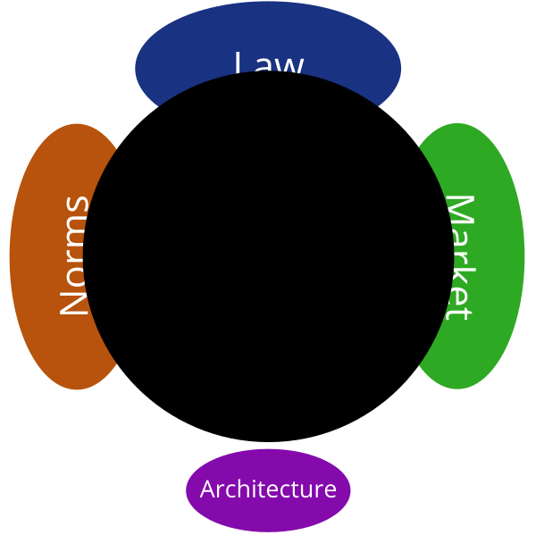
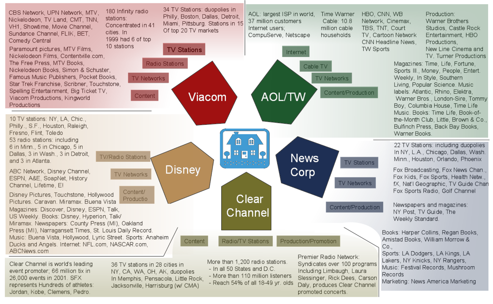

“Property”
The copyright warriors are right: A copyright is a kind of property. It can be owned and sold, and the law protects against its theft. Ordinarily, the copyright owner gets to hold out for any price he wants. Markets reckon the supply and demand that partially determine the price she can get.
But in ordinary language, to call a copyright a “property” right is a bit misleading, for the property of copyright is an odd kind of property. Indeed, the very idea of property in any idea or any expression is very odd. I understand what I am taking when I take the picnic table you put in your backyard. I am taking a thing, the picnic table, and after I take it, you don’t have it. But what am I taking when I take the good idea you had to put a picnic table in the backyard—by, for example, going to Sears, buying a table, and putting it in my backyard? What is the thing I am taking then?
The point is not just about the thingness of picnic tables versus ideas, though that’s an important difference. The point instead is that in the ordinary case—indeed, in practically every case except for a narrow range of exceptions—ideas released to the world are free. I don’t take anything from you when I copy the way you dress—though I might seem weird if I did it every day, and especially weird if you are a woman. Instead, as Thomas Jefferson said (and as is especially true when I copy the way someone else dresses), “He who receives an idea from me, receives instruction himself without lessening mine; as he who lights his taper at mine, receives light without darkening me.”1
The exceptions to free use are ideas and expressions within the reach of the law of patent and copyright, and a few other domains that I won’t discuss here. Here the law says you can’t take my idea or expression without my permission: The law turns the intangible into property.
But how, and to what extent, and in what form—the details, in other words—matter. To get a good sense of how this practice of turning the intangible into property emerged, we need to place this “property” in its proper context.2
My strategy in doing this will be the same as my strategy in the preceding part. I offer four stories to help put the idea of “copyright material is property” in context. Where did the idea come from? What are its limits? How does it function in practice? After these stories, the significance of this true statement—“copyright material is property”—will be a bit more clear, and its implications will be revealed as quite different from the implications that the copyright warriors would have us draw.
Founders
William Shakespeare wrote Romeo and Juliet in 1595. The play was first published in 1597. It was the eleventh major play that Shakespeare had written. He would continue to write plays through 1613, and the plays that he wrote have continued to define Anglo-American culture ever since. So deeply have the works of a sixteenth-century writer seeped into our culture that we often don’t even recognize their source. I once overheard someone commenting on Kenneth Branagh’s adaptation of Henry V: “I liked it, but Shakespeare is so full of clichés.”
In 1774, almost 180 years after Romeo and Juliet was written, the “copy-right” for the work was still thought by many to be the exclusive right of a single London publisher, Jacob Tonson.3 Tonson was the most prominent of a small group of publishers called the Conger4 who controlled bookselling in England during the eighteenth century. The Conger claimed a perpetual right to control the “copy” of books that they had acquired from authors. That perpetual right meant that no one else could publish copies of a book to which they held the copyright. Prices of the classics were thus kept high; competition to produce better or cheaper editions was eliminated.
Now, there’s something puzzling about the year 1774 to anyone who knows a little about copyright law. The better-known year in the history of copyright is 1710, the year that the British Parliament adopted the first “copyright” act. Known as the Statute of Anne, the act stated that all published works would get a copyright term of fourteen years, renewable once if the author was alive, and that all works already published by 1710 would get a single term of twenty-one additional years.5 Under this law, Romeo and Juliet should have been free in 1731. So why was there any issue about it still being under Tonson’s control in 1774?
The reason is that the English hadn’t yet agreed on what a “copy-right” was—indeed, no one had. At the time the English passed the Statute of Anne, there was no other legislation governing copyrights. The last law regulating publishers, the Licensing Act of 1662, had expired in 1695. That law gave publishers a monopoly over publishing, as a way to make it easier for the Crown to control what was published. But after it expired, there was no positive law that said that the publishers, or “Stationers,” had an exclusive right to print books.
There was no positive law, but that didn’t mean that there was no law. The Anglo-American legal tradition looks to both the words of legislatures and the words of judges to know the rules that are to govern how people are to behave. We call the words from legislatures “positive law.” We call the words from judges “common law.” The common law sets the background against which legislatures legislate; the legislature, ordinarily, can trump that background only if it passes a law to displace it. And so the real question after the licensing statutes had expired was whether the common law protected a copyright, independent of any positive law.
This question was important to the publishers, or “booksellers,” as they were called, because there was growing competition from foreign publishers. The Scottish, in particular, were increasingly publishing and exporting books to England. That competition reduced the profits of the Conger, which reacted by demanding that Parliament pass a law to again give them exclusive control over publishing. That demand ultimately resulted in the Statute of Anne.
The Statute of Anne granted the author or “proprietor” of a book an exclusive right to print that book. In an important limitation, however, and to the horror of the booksellers, the law gave the bookseller that right for a limited term. At the end of that term, the copyright “expired,” and the work would then be free and could be published by anyone. Or so the legislature is thought to have believed.
Now, the thing to puzzle about for a moment is this: Why would Parliament limit the exclusive right? Not why would they limit it to the particular limit they set, but why would they limit the right at all?
For the booksellers, and the authors whom they represented, had a very strong claim. Take Romeo and Juliet as an example: That play was written by Shakespeare. It was his genius that brought it into the world. He didn’t take anybody’s property when he created this play (that’s a controversial claim, but never mind), and by his creating this play, he didn’t make it any harder for others to craft a play. So why is it that the law would ever allow someone else to come along and take Shakespeare’s play without his, or his estate’s, permission? What reason is there to allow someone else to “steal” Shakespeare’s work?
The answer comes in two parts. We first need to see something special about the notion of “copyright” that existed at the time of the Statute of Anne. Second, we have to see something important about “booksellers.”
First, about copyright. In the last three hundred years, we have come to apply the concept of “copyright” ever more broadly. But in 1710, it wasn’t so much a concept as it was a very particular right. The copyright was born as a very specific set of restrictions: It forbade others from reprinting a book. In 1710, the “copy-right” was a right to use a particular machine to replicate a particular work. It did not go beyond that very narrow right. It did not control any more generally how a work could be used. Today the right includes a large collection of restrictions on the freedom of others: It grants the author the exclusive right to copy, the exclusive right to distribute, the exclusive right to perform, and so on.
So, for example, even if the copyright to Shakespeare’s works were perpetual, all that would have meant under the original meaning of the term was that no one could reprint Shakespeare’s work without the permission of the Shakespeare estate. It would not have controlled anything, for example, about how the work could be performed, whether the work could be translated, or whether Kenneth Branagh would be allowed to make his films. The “copy-right” was only an exclusive right to print—no less, of course, but also no more.
Even that limited right was viewed with skepticism by the British. They had had a long and ugly experience with “exclusive rights,” especially “exclusive rights” granted by the Crown. The English had fought a civil war in part about the Crown’s practice of handing out monopolies—especially monopolies for works that already existed. King Henry VIII granted a patent to print the Bible and a monopoly to Darcy to print playing cards. The English Parliament began to fight back against this power of the Crown. In 1656, it passed the Statute of Monopolies, limiting monopolies to patents for new inventions. And by 1710, Parliament was eager to deal with the growing monopoly in publishing.
Thus the “copy-right,” when viewed as a monopoly right, was naturally viewed as a right that should be limited. (However convincing the claim that “it’s my property, and I should have it forever,” try sounding convincing when uttering, “It’s my monopoly, and I should have it forever.”) The state would protect the exclusive right, but only so long as it benefited society. The British saw the harms from special-interest favors; they passed a law to stop them.
Second, about booksellers. It wasn’t just that the copyright was a monopoly. It was also that it was a monopoly held by the booksellers. Booksellers sound quaint and harmless to us. They were not viewed as harmless in seventeenth-century England. Members of the Conger were increasingly seen as monopolists of the worst kind—tools of the Crown’s repression, selling the liberty of England to guarantee themselves a monopoly profit. The attacks against these monopolists were harsh: Milton described them as “old patentees and monopolizers in the trade of book-selling”; they were “men who do not therefore labour in an honest profession to which learning is indetted.”6
Many believed the power the booksellers exercised over the spread of knowledge was harming that spread, just at the time the Enlightenment was teaching the importance of education and knowledge spread generally. The idea that knowledge should be free was a hallmark of the time, and these powerful commercial interests were interfering with that idea.
To balance this power, Parliament decided to increase competition among booksellers, and the simplest way to do that was to spread the wealth of valuable books. Parliament therefore limited the term of copyrights, and thereby guaranteed that valuable books would become open to any publisher to publish after a limited time. Thus the setting of the term for existing works to just twenty-one years was a compromise to fight the power of the booksellers. The limitation on terms was an indirect way to assure competition among publishers, and thus the construction and spread of culture.
When 1731 (1710 + 21) came along, however, the booksellers were getting anxious. They saw the consequences of more competition, and like every competitor, they didn’t like them. At first booksellers simply ignored the Statute of Anne, continuing to insist on the perpetual right to control publication. But in 1735 and 1737, they tried to persuade Parliament to extend their terms. Twenty-one years was not enough, they said; they needed more time.
Parliament rejected their requests. As one pamphleteer put it, in words that echo today,
I see no Reason for granting a further Term now, which will not hold as well for granting it again and again, as often as the Old ones Expire; so that should this Bill pass, it will in Effect be establishing a perpetual Monopoly, a Thing deservedly odious in the Eye of the Law; it will be a great Cramp to Trade, a Discouragement to Learning, no Benefit to the Authors, but a general Tax on the Publick; and all this only to increase the private Gain of the Booksellers.7
Having failed in Parliament, the publishers turned to the courts in a series of cases. Their argument was simple and direct: The Statute of Anne gave authors certain protections through positive law, but those protections were not intended as replacements for the common law. Instead, they were intended simply to supplement the common law. Under common law, it was already wrong to take another person’s creative “property” and use it without his permission. The Statute of Anne, the booksellers argued, didn’t change that. Therefore, just because the protections of the Statute of Anne expired, that didn’t mean the protections of the common law expired: Under the common law they had the right to ban the publication of a book, even if its Statute of Anne copyright had expired. This, they argued, was the only way to protect authors.
This was a clever argument, and one that had the support of some of the leading jurists of the day. It also displayed extraordinary chutzpah. Until then, as law professor Raymond Patterson has put it, “The publishers … had as much concern for authors as a cattle rancher has for cattle.”8 The bookseller didn’t care squat for the rights of the author. His concern was the monopoly profit that the author’s work gave.
The booksellers’ argument was not accepted without a fight. The hero of this fight was a Scottish bookseller named Alexander Donaldson.9
Donaldson was an outsider to the London Conger. He began his career in Edinburgh in 1750. The focus of his business was inexpensive reprints “of standard works whose copyright term had expired,” at least under the Statute of Anne.10 Donaldson’s publishing house prospered and became “something of a center for literary Scotsmen.” “[A]mong them,” Professor Mark Rose writes, was “the young James Boswell who, together with his friend Andrew Erskine, published an anthology of contemporary Scottish poems with Donaldson.”11
When the London booksellers tried to shut down Donaldson’s shop in Scotland, he responded by moving his shop to London, where he sold inexpensive editions “of the most popular English books, in defiance of the supposed common law right of Literary Property.”12 His books undercut the Conger prices by 30 to 50 percent, and he rested his right to compete upon the ground that, under the Statute of Anne, the works he was selling had passed out of protection.
The London booksellers quickly brought suit to block “piracy” like Donaldson’s. A number of actions were successful against the “pirates,” the most important early victory being Millar v. Taylor.
Millar was a bookseller who in 1729 had purchased the rights to James Thomson’s poem “The Seasons.” Millar complied with the requirements of the Statute of Anne, and therefore received the full protection of the statute. After the term of copyright ended, Robert Taylor began printing a competing volume. Millar sued, claiming a perpetual common law right, the Statute of Anne notwithstanding.13
Astonishingly to modern lawyers, one of the greatest judges in English history, Lord Mansfield, agreed with the booksellers. Whatever protection the Statute of Anne gave booksellers, it did not, he held, extinguish any common law right. The question was whether the common law would protect the author against subsequent “pirates.” Mansfield’s answer was yes: The common law would bar Taylor from reprinting Thomson’s poem without Millar’s permission. That common law rule thus effectively gave the booksellers a perpetual right to control the publication of any book assigned to them.
Considered as a matter of abstract justice—reasoning as if justice were just a matter of logical deduction from first principles—Mansfield’s conclusion might make some sense. But what it ignored was the larger issue that Parliament had struggled with in 1710: How best to limit the monopoly power of publishers? Parliament’s strategy was to offer a term for existing works that was long enough to buy peace in 1710, but short enough to assure that culture would pass into competition within a reasonable period of time. Within twenty-one years, Parliament believed, Britain would mature from the controlled culture that the Crown coveted to the free culture that we inherited.
The fight to defend the limits of the Statute of Anne was not to end there, however, and it is here that Donaldson enters the mix.
Millar died soon after his victory, so his case was not appealed. His estate sold Thomson’s poems to a syndicate of printers that included Thomas Beckett.14 Donaldson then released an unauthorized edition of Thomson’s works. Beckett, on the strength of the decision in Millar, got an injunction against Donaldson. Donaldson appealed the case to the House of Lords, which functioned much like our own Supreme Court. In February of 1774, that body had the chance to interpret the meaning of Parliament’s limits from sixty years before.
As few legal cases ever do, Donaldson v. Beckett drew an enormous amount of attention throughout Britain. Donaldson’s lawyers argued that whatever rights may have existed under the common law, the Statute of Anne terminated those rights. After passage of the Statute of Anne, the only legal protection for an exclusive right to control publication came from that statute. Thus, they argued, after the term specified in the Statute of Anne expired, works that had been protected by the statute were no longer protected.
The House of Lords was an odd institution. Legal questions were presented to the House and voted upon first by the “law lords,” members of special legal distinction who functioned much like the Justices in our Supreme Court. Then, after the law lords voted, the House of Lords generally voted.
The reports about the law lords’ votes are mixed. On some counts, it looks as if perpetual copyright prevailed. But there is no ambiguity about how the House of Lords voted as a whole. By a two-to-one majority (22 to 11) they voted to reject the idea of perpetual copyrights. Whatever one’s understanding of the common law, now a copyright was fixed for a limited time, after which the work protected by copyright passed into the public domain.
“The public domain.” Before the case of Donaldson v. Beckett, there was no clear idea of a public domain in England. Before 1774, there was a strong argument that common law copyrights were perpetual. After 1774, the public domain was born. For the first time in Anglo-American history, the legal control over creative works expired, and the greatest works in English history—including those of Shakespeare, Bacon, Milton, Johnson, and Bunyan—were free of legal restraint.
It is hard for us to imagine, but this decision by the House of Lords fueled an extraordinarily popular and political reaction. In Scotland, where most of the “pirate publishers” did their work, people celebrated the decision in the streets. As the Edinburgh Advertiser reported, “No private cause has so much engrossed the attention of the public, and none has been tried before the House of Lords in the decision of which so many individuals were interested.” “Great rejoicing in Edinburgh upon victory over literary property: bonfires and illuminations.”15
In London, however, at least among publishers, the reaction was equally strong in the opposite direction. The Morning Chronicle reported:
By the above decision … near 200,000 pounds worth of what was honestly purchased at public sale, and which was yesterday thought property is now reduced to nothing. The Booksellers of London and Westminster, many of whom sold estates and houses to purchase Copy-right, are in a manner ruined, and those who after many years industry thought they had acquired a competency to provide for their families now find themselves without a shilling to devise to their successors. 16
“Ruined” is a bit of an exaggeration. But it is not an exaggeration to say that the change was profound. The decision of the House of Lords meant that the booksellers could no longer control how culture in England would grow and develop. Culture in England was thereafter free. Not in the sense that copyrights would not be respected, for of course, for a limited time after a work was published, the bookseller had an exclusive right to control the publication of that book. And not in the sense that books could be stolen, for even after a copyright expired, you still had to buy the book from someone. But free in the sense that the culture and its growth would no longer be controlled by a small group of publishers. As every free market does, this free market of free culture would grow as the consumers and producers chose. English culture would develop as the many English readers chose to let it develop—chose in the books they bought and wrote; chose in the memes they repeated and endorsed. Chose in a competitive context, not a context in which the choices about what culture is available to people and how they get access to it are made by the few despite the wishes of the many.
At least, this was the rule in a world where the Parliament is anti-monopoly, resistant to the protectionist pleas of publishers. In a world where the Parliament is more pliant, free culture would be less protected.
Recorders
Jon Else is a filmmaker. He is best known for his documentaries and has been very successful in spreading his art. He is also a teacher, and as a teacher myself, I envy the loyalty and admiration that his students feel for him. (I met, by accident, two of his students at a dinner party. He was their god.)
Else worked on a documentary that I was involved in. At a break, he told me a story about the freedom to create with film in America today.
In 1990, Else was working on a documentary about Wagner’s Ring Cycle. The focus was stagehands at the San Francisco Opera. Stagehands are a particularly funny and colorful element of an opera. During a show, they hang out below the stage in the grips’ lounge and in the lighting loft. They make a perfect contrast to the art on the stage.
During one of the performances, Else was shooting some stagehands playing checkers. In one corner of the room was a television set. Playing on the television set, while the stagehands played checkers and the opera company played Wagner, was The Simpsons. As Else judged it, this touch of cartoon helped capture the flavor of what was special about the scene.
Years later, when he finally got funding to complete the film, Else attempted to clear the rights for those few seconds of The Simpsons. For of course, those few seconds are copyrighted; and of course, to use copyrighted material you need the permission of the copyright owner, unless “fair use” or some other privilege applies.
Else called Simpsons creator Matt Groening’s office to get permission. Groening approved the shot. The shot was a four-and-a-half-second image on a tiny television set in the corner of the room. How could it hurt? Groening was happy to have it in the film, but he told Else to contact Gracie Films, the company that produces the program.
Gracie Films was okay with it, too, but they, like Groening, wanted to be careful. So they told Else to contact Fox, Gracie’s parent company. Else called Fox and told them about the clip in the corner of the one room shot of the film. Matt Groening had already given permission, Else said. He was just confirming the permission with Fox.
Then, as Else told me, “two things happened. First we discovered … that Matt Groening doesn’t own his own creation—or at least that someone [at Fox] believes he doesn’t own his own creation.” And second, Fox “wanted ten thousand dollars as a licensing fee for us to use this four-point-five seconds of … entirely unsolicited Simpsons which was in the corner of the shot.”
Else was certain there was a mistake. He worked his way up to someone he thought was a vice president for licensing, Rebecca Herrera. He explained to her, “There must be some mistake here… We’re asking for your educational rate on this.” That was the educational rate, Herrera told Else. A day or so later, Else called again to confirm what he had been told.
“I wanted to make sure I had my facts straight,” he told me. “Yes, you have your facts straight,” she said. It would cost $10,000 to use the clip of The Simpsons in the corner of a shot in a documentary film about Wagner’s Ring Cycle. And then, astonishingly, Herrera told Else, “And if you quote me, I’ll turn you over to our attorneys.” As an assistant to Herrera told Else later on, “They don’t give a shit. They just want the money.”
Else didn’t have the money to buy the right to replay what was playing on the television backstage at the San Francisco Opera. To reproduce this reality was beyond the documentary filmmaker’s budget. At the very last minute before the film was to be released, Else digitally replaced the shot with a clip from another film that he had worked on, The Day After Trinity, from ten years before.
There’s no doubt that someone, whether Matt Groening or Fox, owns the copyright to The Simpsons. That copyright is their property. To use that copyrighted material thus sometimes requires the permission of the copyright owner. If the use that Else wanted to make of the Simpsons copyright were one of the uses restricted by the law, then he would need to get the permission of the copyright owner before he could use the work in that way. And in a free market, it is the owner of the copyright who gets to set the price for any use that the law says the owner gets to control.
For example, “public performance” is a use of The Simpsons that the copyright owner gets to control. If you take a selection of favorite episodes, rent a movie theater, and charge for tickets to come see “My Favorite Simpsons,” then you need to get permission from the copyright owner. And the copyright owner (rightly, in my view) can charge whatever she wants—$10 or $1,000,000. That’s her right, as set by the law.
But when lawyers hear this story about Jon Else and Fox, their first thought is “fair use.”17 Else’s use of just 4.5 seconds of an indirect shot of a Simpsons episode is clearly a fair use of _The Simpsons_—and fair use does not require the permission of anyone.
So I asked Else why he didn’t just rely upon “fair use.” Here’s his reply:
The Simpsons fiasco was for me a great lesson in the gulf between what lawyers find irrelevant in some abstract sense, and what is crushingly relevant in practice to those of us actually trying to make and broadcast documentaries. I never had any doubt that it was “clearly fair use” in an absolute legal sense. But I couldn’t rely on the concept in any concrete way. Here’s why:
- Before our films can be broadcast, the network requires that we buy Errors and Omissions insurance. The carriers require a detailed “visual cue sheet” listing the source and licensing status of each shot in the film. They take a dim view of “fair use,” and a claim of “fair use” can grind the application process to a halt.
- I probably never should have asked Matt Groening in the first place. But I knew (at least from folklore) that Fox had a history of tracking down and stopping unlicensed Simpsons usage, just as George Lucas had a very high profile litigating Star Wars usage. So I decided to play by the book, thinking that we would be granted free or cheap license to four seconds of Simpsons. As a documentary producer working to exhaustion on a shoestring, the last thing I wanted was to risk legal trouble, even nuisance legal trouble, and even to defend a principle.
- I did, in fact, speak with one of your colleagues at Stanford Law School … who confirmed that it was fair use. He also confirmed that Fox would “depose and litigate you to within an inch of your life,” regardless of the merits of my claim. He made clear that it would boil down to who had the bigger legal department and the deeper pockets, me or them.
- The question of fair use usually comes up at the end of the project, when we are up against a release deadline and out of money.
In theory, fair use means you need no permission. The theory therefore supports free culture and insulates against a permission culture. But in practice, fair use functions very differently. The fuzzy lines of the law, tied to the extraordinary liability if lines are crossed, means that the effective fair use for many types of creators is slight. The law has the right aim; practice has defeated the aim.
This practice shows just how far the law has come from its eighteenth-century roots. The law was born as a shield to protect publishers’ profits against the unfair competition of a pirate. It has matured into a sword that interferes with any use, transformative or not.
Transformers
In 1993, Alex Alben was a lawyer working at Starwave, Inc. Starwave was an innovative company founded by Microsoft cofounder Paul Allen to develop digital entertainment. Long before the Internet became popular, Starwave began investing in new technology for delivering entertainment in anticipation of the power of networks.
Alben had a special interest in new technology. He was intrigued by the emerging market for CD-ROM technology—not to distribute film, but to do things with film that otherwise would be very difficult. In 1993, he launched an initiative to develop a product to build retrospectives on the work of particular actors. The first actor chosen was Clint Eastwood. The idea was to showcase all of the work of Eastwood, with clips from his films and interviews with figures important to his career.
At that time, Eastwood had made more than fifty films, as an actor and as a director. Alben began with a series of interviews with Eastwood, asking him about his career. Because Starwave produced those interviews, it was free to include them on the CD.
That alone would not have made a very interesting product, so Starwave wanted to add content from the movies in Eastwood’s career: posters, scripts, and other material relating to the films Eastwood made. Most of his career was spent at Warner Brothers, and so it was relatively easy to get permission for that content.
Then Alben and his team decided to include actual film clips. “Our goal was that we were going to have a clip from every one of Eastwood’s films,” Alben told me. It was here that the problem arose. “No one had ever really done this before,” Alben explained. “No one had ever tried to do this in the context of an artistic look at an actor’s career.”
Alben brought the idea to Michael Slade, the CEO of Starwave. Slade asked, “Well, what will it take?”
Alben replied, “Well, we’re going to have to clear rights from everyone who appears in these films, and the music and everything else that we want to use in these film clips.” Slade said, “Great! Go for it.”18
The problem was that neither Alben nor Slade had any idea what clearing those rights would mean. Every actor in each of the films could have a claim to royalties for the reuse of that film. But CD-ROMs had not been specified in the contracts for the actors, so there was no clear way to know just what Starwave was to do.
I asked Alben how he dealt with the problem. With an obvious pride in his resourcefulness that obscured the obvious bizarreness of his tale, Alben recounted just what they did:
So we very mechanically went about looking up the film clips. We made some artistic decisions about what film clips to include—of course we were going to use the “Make my day” clip from Dirty Harry. But you then need to get the guy on the ground who’s wiggling under the gun and you need to get his permission. And then you have to decide what you are going to pay him.
We decided that it would be fair if we offered them the day-player rate for the right to reuse that performance. We’re talking about a clip of less than a minute, but to reuse that performance in the CD-ROM the rate at the time was about $600.
So we had to identify the people—some of them were hard to identify because in Eastwood movies you can’t tell who’s the guy crashing through the glass—is it the actor or is it the stuntman? And then we just, we put together a team, my assistant and some others, and we just started calling people.
Some actors were glad to help—Donald Sutherland, for example, followed up himself to be sure that the rights had been cleared. Others were dumbfounded at their good fortune. Alben would ask, “Hey, can I pay you $600 or maybe if you were in two films, you know, $1,200?” And they would say, “Are you for real? Hey, I’d love to get $1,200.” And some of course were a bit difficult (estranged ex-wives, in particular). But eventually, Alben and his team had cleared the rights to this retrospective CD-ROM on Clint Eastwood’s career.
It was one year later—“and even then we weren’t sure whether we were totally in the clear.”
Alben is proud of his work. The project was the first of its kind and the only time he knew of that a team had undertaken such a massive project for the purpose of releasing a retrospective.
Everyone thought it would be too hard. Everyone just threw up their hands and said, “Oh, my gosh, a film, it’s so many copyrights, there’s the music, there’s the screenplay, there’s the director, there’s the actors.” But we just broke it down. We just put it into its constituent parts and said, “Okay, there’s this many actors, this many directors, … this many musicians,” and we just went at it very systematically and cleared the rights.
And no doubt, the product itself was exceptionally good. Eastwood loved it, and it sold very well.
But I pressed Alben about how weird it seems that it would have to take a year’s work simply to clear rights. No doubt Alben had done this efficiently, but as Peter Drucker has famously quipped, “There is nothing so useless as doing efficiently that which should not be done at all.”19 Did it make sense, I asked Alben, that this is the way a new work has to be made?
For, as he acknowledged, “very few … have the time and resources, and the will to do this,” and thus, very few such works would ever be made. Does it make sense, I asked him, from the standpoint of what anybody really thought they were ever giving rights for originally, that you would have to go clear rights for these kinds of clips?
I don’t think so. When an actor renders a performance in a movie, he or she gets paid very well… And then when 30 seconds of that performance is used in a new product that is a retrospective of somebody’s career, I don’t think that that person … should be compensated for that.
Or at least, is this how the artist should be compensated? Would it make sense, I asked, for there to be some kind of statutory license that someone could pay and be free to make derivative use of clips like this? Did it really make sense that a follow-on creator would have to track down every artist, actor, director, musician, and get explicit permission from each? Wouldn’t a lot more be created if the legal part of the creative process could be made to be more clean?
Absolutely. I think that if there were some fair-licensing mechanism—where you weren’t subject to hold-ups and you weren’t subject to estranged former spouses—you’d see a lot more of this work, because it wouldn’t be so daunting to try to put together a retrospective of someone’s career and meaningfully illustrate it with lots of media from that person’s career. You’d build in a cost as the producer of one of these things. You’d build in a cost of paying X dollars to the talent that performed. But it would be a known cost. That’s the thing that trips everybody up and makes this kind of product hard to get off the ground. If you knew I have a hundred minutes of film in this product and it’s going to cost me X, then you build your budget around it, and you can get investments and everything else that you need to produce it. But if you say, “Oh, I want a hundred minutes of something and I have no idea what it’s going to cost me, and a certain number of people are going to hold me up for money,” then it becomes difficult to put one of these things together.
Alben worked for a big company. His company was backed by some of the richest investors in the world. He therefore had authority and access that the average Web designer would not have. So if it took him a year, how long would it take someone else? And how much creativity is never made just because the costs of clearing the rights are so high?
These costs are the burdens of a kind of regulation. Put on a Republican hat for a moment, and get angry for a bit. The government defines the scope of these rights, and the scope defined determines how much it’s going to cost to negotiate them. (Remember the idea that land runs to the heavens, and imagine the pilot purchasing fly-through rights as he negotiates to fly from Los Angeles to San Francisco.) These rights might well have once made sense; but as circumstances change, they make no sense at all. Or at least, a well-trained, regulation-minimizing Republican should look at the rights and ask, “Does this still make sense?”
I’ve seen the flash of recognition when people get this point, but only a few times. The first was at a conference of federal judges in California. The judges were gathered to discuss the emerging topic of cyber-law. I was asked to be on the panel. Harvey Saferstein, a well-respected lawyer from an L.A. firm, introduced the panel with a video that he and a friend, Robert Fairbank, had produced.
The video was a brilliant collage of film from every period in the twentieth century, all framed around the idea of a 60 Minutes episode. The execution was perfect, down to the sixty-minute stopwatch. The judges loved every minute of it.
When the lights came up, I looked over to my copanelist, David Nimmer, perhaps the leading copyright scholar and practitioner in the nation. He had an astonished look on his face, as he peered across the room of over 250 well-entertained judges. Taking an ominous tone, he began his talk with a question: “Do you know how many federal laws were just violated in this room?”
For of course, the two brilliantly talented creators who made this film hadn’t done what Alben did. They hadn’t spent a year clearing the rights to these clips; technically, what they had done violated the law. Of course, it wasn’t as if they or anyone were going to be prosecuted for this violation (the presence of 250 judges and a gaggle of federal marshals notwithstanding). But Nimmer was making an important point: A year before anyone would have heard of the word Napster, and two years before another member of our panel, David Boies, would defend Napster before the Ninth Circuit Court of Appeals, Nimmer was trying to get the judges to see that the law would not be friendly to the capacities that this technology would enable. Technology means you can now do amazing things easily; but you couldn’t easily do them legally.
We live in a “cut and paste” culture enabled by technology. Anyone building a presentation knows the extraordinary freedom that the cut and paste architecture of the Internet created—in a second you can find just about any image you want; in another second, you can have it planted in your presentation.
But presentations are just a tiny beginning. Using the Internet and its archives, musicians are able to string together mixes of sound never before imagined; filmmakers are able to build movies out of clips on computers around the world. An extraordinary site in Sweden takes images of politicians and blends them with music to create biting political commentary. A site called Camp Chaos has produced some of the most biting criticism of the record industry that there is through the mixing of Flash! and music.
All of these creations are technically illegal. Even if the creators wanted to be “legal,” the cost of complying with the law is impossibly high. Therefore, for the law-abiding sorts, a wealth of creativity is never made. And for that part that is made, if it doesn’t follow the clearance rules, it doesn’t get released.
To some, these stories suggest a solution: Let’s alter the mix of rights so that people are free to build upon our culture. Free to add or mix as they see fit. We could even make this change without necessarily requiring that the “free” use be free as in “free beer.” Instead, the system could simply make it easy for follow-on creators to compensate artists without requiring an army of lawyers to come along: a rule, for example, that says “the royalty owed the copyright owner of an unregistered work for the derivative reuse of his work will be a flat 1 percent of net revenues, to be held in escrow for the copyright owner.” Under this rule, the copyright owner could benefit from some royalty, but he would not have the benefit of a full property right (meaning the right to name his own price) unless he registers the work.
Who could possibly object to this? And what reason would there be for objecting? We’re talking about work that is not now being made; which if made, under this plan, would produce new income for artists. What reason would anyone have to oppose it?
In February 2003, DreamWorks studios announced an agreement with Mike Myers, the comic genius of Saturday Night Live and Austin Powers. According to the announcement, Myers and DreamWorks would work together to form a “unique filmmaking pact.” Under the agreement, DreamWorks “will acquire the rights to existing motion picture hits and classics, write new storylines and—with the use of state-of-the-art digital technology—insert Myers and other actors into the film, thereby creating an entirely new piece of entertainment.”
The announcement called this “film sampling.” As Myers explained, “Film Sampling is an exciting way to put an original spin on existing films and allow audiences to see old movies in a new light. Rap artists have been doing this for years with music and now we are able to take that same concept and apply it to film.” Steven Spielberg is quoted as saying, “If anyone can create a way to bring old films to new audiences, it is Mike.”
Spielberg is right. Film sampling by Myers will be brilliant. But if you don’t think about it, you might miss the truly astonishing point about this announcement. As the vast majority of our film heritage remains under copyright, the real meaning of the DreamWorks announcement is just this: It is Mike Myers and only Mike Myers who is free to sample. Any general freedom to build upon the film archive of our culture, a freedom in other contexts presumed for us all, is now a privilege reserved for the funny and famous—and presumably rich.
This privilege becomes reserved for two sorts of reasons. The first continues the story of the last chapter: the vagueness of “fair use.” Much of “sampling” should be considered “fair use.” But few would rely upon so weak a doctrine to create. That leads to the second reason that the privilege is reserved for the few: The costs of negotiating the legal rights for the creative reuse of content are astronomically high. These costs mirror the costs with fair use: You either pay a lawyer to defend your fair use rights or pay a lawyer to track down permissions so you don’t have to rely upon fair use rights. Either way, the creative process is a process of paying lawyers—again a privilege, or perhaps a curse, reserved for the few.
Collectors
In April 1996, millions of “bots”—computer codes designed to “spider,” or automatically search the Internet and copy content—began running across the Net. Page by page, these bots copied Internet-based information onto a small set of computers located in a basement in San Francisco’s Presidio. Once the bots finished the whole of the Internet, they started again. Over and over again, once every two months, these bits of code took copies of the Internet and stored them.
By October 2001, the bots had collected more than five years of copies. And at a small announcement in Berkeley, California, the archive that these copies created, the Internet Archive, was opened to the world. Using a technology called “the Way Back Machine,” you could enter a Web page, and see all of its copies going back to 1996, as well as when those pages changed.
This is the thing about the Internet that Orwell would have appreciated. In the dystopia described in 1984, old newspapers were constantly updated to assure that the current view of the world, approved of by the government, was not contradicted by previous news reports. Thousands of workers constantly reedited the past, meaning there was no way ever to know whether the story you were reading today was the story that was printed on the date published on the paper.
It’s the same with the Internet. If you go to a Web page today, there’s no way for you to know whether the content you are reading is the same as the content you read before. The page may seem the same, but the content could easily be different. The Internet is Orwell’s library—constantly updated, without any reliable memory.
Until the Way Back Machine, at least. With the Way Back Machine, and the Internet Archive underlying it, you can see what the Internet was. You have the power to see what you remember. More importantly, perhaps, you also have the power to find what you don’t remember and what others might prefer you forget.20
We take it for granted that we can go back to see what we remember reading. Think about newspapers. If you wanted to study the reaction of your hometown newspaper to the race riots in Watts in 1965, or to Bull Connor’s water cannon in 1963, you could go to your public library and look at the newspapers. Those papers probably exist on microfiche. If you’re lucky, they exist in paper, too. Either way, you are free, using a library, to go back and remember—not just what it is convenient to remember, but remember something close to the truth.
It is said that those who fail to remember history are doomed to repeat it. That’s not quite correct. We all forget history. The key is whether we have a way to go back to rediscover what we forget. More directly, the key is whether an objective past can keep us honest. Libraries help do that, by collecting content and keeping it, for schoolchildren, for researchers, for grandma. A free society presumes this knowedge.
The Internet was an exception to this presumption. Until the Internet Archive, there was no way to go back. The Internet was the quintessentially transitory medium. And yet, as it becomes more important in forming and reforming society, it becomes more and more important to maintain in some historical form. It’s just bizarre to think that we have scads of archives of newspapers from tiny towns around the world, yet there is but one copy of the Internet—the one kept by the Internet Archive.
Brewster Kahle is the founder of the Internet Archive. He was a very successful Internet entrepreneur after he was a successful computer researcher. In the 1990s, Kahle decided he had had enough business success. It was time to become a different kind of success. So he launched a series of projects designed to archive human knowledge. The Internet Archive was just the first of the projects of this Andrew Carnegie of the Internet. By December of 2002, the archive had over 10 billion pages, and it was growing at about a billion pages a month.
The Way Back Machine is the largest archive of human knowledge in human history. At the end of 2002, it held “two hundred and thirty terabytes of material”—and was “ten times larger than the Library of Congress.” And this was just the first of the archives that Kahle set out to build. In addition to the Internet Archive, Kahle has been constructing the Television Archive. Television, it turns out, is even more ephemeral than the Internet. While much of twentieth-century culture was constructed through television, only a tiny proportion of that culture is available for anyone to see today. Three hours of news are recorded each evening by Vanderbilt University—thanks to a specific exemption in the copyright law. That content is indexed, and is available to scholars for a very low fee. “But other than that, [television] is almost unavailable,” Kahle told me. “If you were Barbara Walters you could get access to [the archives], but if you are just a graduate student?” As Kahle put it,
Do you remember when Dan Quayle was interacting with Murphy Brown? Remember that back and forth surreal experience of a politician interacting with a fictional television character? If you were a graduate student wanting to study that, and you wanted to get those original back and forth exchanges between the two, the 60 Minutes episode that came out after it … it would be almost impossible… Those materials are almost unfindable…
Why is that? Why is it that the part of our culture that is recorded in newspapers remains perpetually accessible, while the part that is recorded on videotape is not? How is it that we’ve created a world where researchers trying to understand the effect of media on nineteenth-century America will have an easier time than researchers trying to understand the effect of media on twentieth-century America?
In part, this is because of the law. Early in American copyright law, copyright owners were required to deposit copies of their work in libraries. These copies were intended both to facilitate the spread of knowledge and to assure that a copy of the work would be around once the copyright expired, so that others might access and copy the work.
These rules applied to film as well. But in 1915, the Library of Congress made an exception for film. Film could be copyrighted so long as such deposits were made. But the filmmaker was then allowed to borrow back the deposits—for an unlimited time at no cost. In 1915 alone, there were more than 5,475 films deposited and “borrowed back.” Thus, when the copyrights to films expire, there is no copy held by any library. The copy exists—if it exists at all—in the library archive of the film company.21
The same is generally true about television. Television broadcasts were originally not copyrighted—there was no way to capture the broadcasts, so there was no fear of “theft.” But as technology enabled capturing, broadcasters relied increasingly upon the law. The law required they make a copy of each broadcast for the work to be “copyrighted.” But those copies were simply kept by the broadcasters. No library had any right to them; the government didn’t demand them. The content of this part of American culture is practically invisible to anyone who would look.
Kahle was eager to correct this. Before September 11, 2001, he and his allies had started capturing television. They selected twenty stations from around the world and hit the Record button. After September 11, Kahle, working with dozens of others, selected twenty stations from around the world and, beginning October 11, 2001, made their coverage during the week of September 11 available free on-line. Anyone could see how news reports from around the world covered the events of that day.
Kahle had the same idea with film. Working with Rick Prelinger, whose archive of film includes close to 45,000 “ephemeral films” (meaning films other than Hollywood movies, films that were never copyrighted), Kahle established the Movie Archive. Prelinger let Kahle digitize 1,300 films in this archive and post those films on the Internet to be downloaded for free. Prelinger’s is a for-profit company. It sells copies of these films as stock footage. What he has discovered is that after he made a significant chunk available for free, his stock footage sales went up dramatically. People could easily find the material they wanted to use. Some downloaded that material and made films on their own. Others purchased copies to enable other films to be made. Either way, the archive enabled access to this important part of our culture. Want to see a copy of the “Duck and Cover” film that instructed children how to save themselves in the middle of nuclear attack? Go to archive.org, and you can download the film in a few minutes—for free.
Here again, Kahle is providing access to a part of our culture that we otherwise could not get easily, if at all. It is yet another part of what defines the twentieth century that we have lost to history. The law doesn’t require these copies to be kept by anyone, or to be deposited in an archive by anyone. Therefore, there is no simple way to find them.
The key here is access, not price. Kahle wants to enable free access to this content, but he also wants to enable others to sell access to it. His aim is to ensure competition in access to this important part of our culture. Not during the commercial life of a bit of creative property, but during a second life that all creative property has—a noncommercial life.
For here is an idea that we should more clearly recognize. Every bit of creative property goes through different “lives.” In its first life, if the creator is lucky, the content is sold. In such cases the commercial market is successful for the creator. The vast majority of creative property doesn’t enjoy such success, but some clearly does. For that content, commercial life is extremely important. Without this commercial market, there would be, many argue, much less creativity.
After the commercial life of creative property has ended, our tradition has always supported a second life as well. A newspaper delivers the news every day to the doorsteps of America. The very next day, it is used to wrap fish or to fill boxes with fragile gifts or to build an archive of knowledge about our history. In this second life, the content can continue to inform even if that information is no longer sold.
The same has always been true about books. A book goes out of print very quickly (the average today is after about a year22). After it is out of print, it can be sold in used book stores without the copyright owner getting anything and stored in libraries, where many get to read the book, also for free. Used book stores and libraries are thus the second life of a book. That second life is extremely important to the spread and stability of culture.
Yet increasingly, any assumption about a stable second life for creative property does not hold true with the most important components of popular culture in the twentieth and twenty-first centuries. For these—television, movies, music, radio, the Internet—there is no guarantee of a second life. For these sorts of culture, it is as if we’ve replaced libraries with Barnes & Noble superstores. With this culture, what’s accessible is nothing but what a certain limited market demands. Beyond that, culture disappears.
For most of the twentieth century, it was economics that made this so. It would have been insanely expensive to collect and make accessible all television and film and music: The cost of analog copies is extraordinarily high. So even though the law in principle would have restricted the ability of a Brewster Kahle to copy culture generally, the real restriction was economics. The market made it impossibly difficult to do anything about this ephemeral culture; the law had little practical effect.
Perhaps the single most important feature of the digital revolution is that for the first time since the Library of Alexandria, it is feasible to imagine constructing archives that hold all culture produced or distributed publicly. Technology makes it possible to imagine an archive of all books published, and increasingly makes it possible to imagine an archive of all moving images and sound.
The scale of this potential archive is something we’ve never imagined before. The Brewster Kahles of our history have dreamed about it; but we are for the first time at a point where that dream is possible. As Kahle describes,
It looks like there’s about two to three million recordings of music. Ever. There are about a hundred thousand theatrical releases of movies, … and about one to two million movies [distributed] during the twentieth century. There are about twenty-six million different titles of books. All of these would fit on computers that would fit in this room and be able to be afforded by a small company. So we’re at a turning point in our history. Universal access is the goal. And the opportunity of leading a different life, based on this, is … thrilling. It could be one of the things humankind would be most proud of. Up there with the Library of Alexandria, putting a man on the moon, and the invention of the printing press.
Kahle is not the only librarian. The Internet Archive is not the only archive. But Kahle and the Internet Archive suggest what the future of libraries or archives could be. When the commercial life of creative property ends, I don’t know. But it does. And whenever it does, Kahle and his archive hint at a world where this knowledge, and culture, remains perpetually available. Some will draw upon it to understand it; some to criticize it. Some will use it, as Walt Disney did, to re-create the past for the future. These technologies promise something that had become unimaginable for much of our past—a future for our past. The technology of digital arts could make the dream of the Library of Alexandria real again.
Technologists have thus removed the economic costs of building such an archive. But lawyers’ costs remain. For as much as we might like to call these “archives,” as warm as the idea of a “library” might seem, the “content” that is collected in these digital spaces is also someone’s “property.” And the law of property restricts the freedoms that Kahle and others would exercise.
“Property”
Jack Valenti has been the president of the Motion Picture Association of America since 1966. He first came to Washington, D.C., with Lyndon Johnson’s administration—literally. The famous picture of Johnson’s swearing-in on Air Force One after the assassination of President Kennedy has Valenti in the background. In his almost forty years of running the MPAA, Valenti has established himself as perhaps the most prominent and effective lobbyist in Washington.
The MPAA is the American branch of the international Motion Picture Association. It was formed in 1922 as a trade association whose goal was to defend American movies against increasing domestic criticism. The organization now represents not only filmmakers but producers and distributors of entertainment for television, video, and cable. Its board is made up of the chairmen and presidents of the seven major producers and distributors of motion picture and television programs in the United States: Walt Disney, Sony Pictures Entertainment, MGM, Paramount Pictures, Twentieth Century Fox, Universal Studios, and Warner Brothers.
Valenti is only the third president of the MPAA. No president before him has had as much influence over that organization, or over Washington. As a Texan, Valenti has mastered the single most important political skill of a Southerner—the ability to appear simple and slow while hiding a lightning-fast intellect. To this day, Valenti plays the simple, humble man. But this Harvard MBA, and author of four books, who finished high school at the age of fifteen and flew more than fifty combat missions in World War II, is no Mr. Smith. When Valenti went to Washington, he mastered the city in a quintessentially Washingtonian way.
In defending artistic liberty and the freedom of speech that our culture depends upon, the MPAA has done important good. In crafting the MPAA rating system, it has probably avoided a great deal of speech-regulating harm. But there is an aspect to the organization’s mission that is both the most radical and the most important. This is the organization’s effort, epitomized in Valenti’s every act, to redefine the meaning of “creative property.”
In 1982, Valenti’s testimony to Congress captured the strategy perfectly:
No matter the lengthy arguments made, no matter the charges and the counter-charges, no matter the tumult and the shouting, reasonable men and women will keep returning to the fundamental issue, the central theme which animates this entire debate: Creative property owners must be accorded the same rights and protection resident in all other property owners in the nation. That is the issue. That is the question. And that is the rostrum on which this entire hearing and the debates to follow must rest.23
The strategy of this rhetoric, like the strategy of most of Valenti’s rhetoric, is brilliant and simple and brilliant because simple. The “central theme” to which “reasonable men and women” will return is this: “Creative property owners must be accorded the same rights and protections resident in all other property owners in the nation.” There are no second-class citizens, Valenti might have continued. There should be no second-class property owners.
This claim has an obvious and powerful intuitive pull. It is stated with such clarity as to make the idea as obvious as the notion that we use elections to pick presidents. But in fact, there is no more extreme a claim made by anyone who is serious in this debate than this claim of Valenti’s. Jack Valenti, however sweet and however brilliant, is perhaps the nation’s foremost extremist when it comes to the nature and scope of “creative property.” His views have no reasonable connection to our actual legal tradition, even if the subtle pull of his Texan charm has slowly redefined that tradition, at least in Washington.
While “creative property” is certainly “property” in a nerdy and precise sense that lawyers are trained to understand,24 it has never been the case, nor should it be, that “creative property owners” have been “accorded the same rights and protection resident in all other property owners.” Indeed, if creative property owners were given the same rights as all other property owners, that would effect a radical, and radically undesirable, change in our tradition.
Valenti knows this. But he speaks for an industry that cares squat for our tradition and the values it represents. He speaks for an industry that is instead fighting to restore the tradition that the British overturned in 1710. In the world that Valenti’s changes would create, a powerful few would exercise powerful control over how our creative culture would develop.
I have two purposes in this chapter. The first is to convince you that, historically, Valenti’s claim is absolutely wrong. The second is to convince you that it would be terribly wrong for us to reject our history. We have always treated rights in creative property differently from the rights resident in all other property owners. They have never been the same. And they should never be the same, because, however counterintuitive this may seem, to make them the same would be to fundamentally weaken the opportunity for new creators to create. Creativity depends upon the owners of creativity having less than perfect control.
Organizations such as the MPAA, whose board includes the most powerful of the old guard, have little interest, their rhetoric notwithstanding, in assuring that the new can displace them. No organization does. No person does. (Ask me about tenure, for example.) But what’s good for the MPAA is not necessarily good for America. A society that defends the ideals of free culture must preserve precisely the opportunity for new creativity to threaten the old.
To get just a hint that there is something fundamentally wrong in Valenti’s argument, we need look no further than the United States Constitution itself.
The framers of our Constitution loved “property.” Indeed, so strongly did they love property that they built into the Constitution an important requirement. If the government takes your property—if it condemns your house, or acquires a slice of land from your farm—it is required, under the Fifth Amendment’s “Takings Clause,” to pay you “just compensation” for that taking. The Constitution thus guarantees that property is, in a certain sense, sacred. It cannot ever be taken from the property owner unless the government pays for the privilege.
Yet the very same Constitution speaks very differently about what Valenti calls “creative property.” In the clause granting Congress the power to create “creative property,” the Constitution requires that after a “limited time,” Congress take back the rights that it has granted and set the “creative property” free to the public domain. Yet when Congress does this, when the expiration of a copyright term “takes” your copyright and turns it over to the public domain, Congress does not have any obligation to pay “just compensation” for this “taking.” Instead, the same Constitution that requires compensation for your land requires that you lose your “creative property” right without any compensation at all.
The Constitution thus on its face states that these two forms of property are not to be accorded the same rights. They are plainly to be treated differently. Valenti is therefore not just asking for a change in our tradition when he argues that creative-property owners should be accorded the same rights as every other property-right owner. He is effectively arguing for a change in our Constitution itself.
Arguing for a change in our Constitution is not necessarily wrong. There was much in our original Constitution that was plainly wrong. The Constitution of 1789 entrenched slavery; it left senators to be appointed rather than elected; it made it possible for the electoral college to produce a tie between the president and his own vice president (as it did in 1800). The framers were no doubt extraordinary, but I would be the first to admit that they made big mistakes. We have since rejected some of those mistakes; no doubt there could be others that we should reject as well. So my argument is not simply that because Jefferson did it, we should, too.
Instead, my argument is that because Jefferson did it, we should at least try to understand why. Why did the framers, fanatical property types that they were, reject the claim that creative property be given the same rights as all other property? Why did they require that for creative property there must be a public domain?
To answer this question, we need to get some perspective on the history of these “creative property” rights, and the control that they enabled. Once we see clearly how differently these rights have been defined, we will be in a better position to ask the question that should be at the core of this war: Not whether creative property should be protected, but how. Not whether we will enforce the rights the law gives to creative-property owners, but what the particular mix of rights ought to be. Not whether artists should be paid, but whether institutions designed to assure that artists get paid need also control how culture develops.
To answer these questions, we need a more general way to talk about how property is protected. More precisely, we need a more general way than the narrow language of the law allows. In Code and Other Laws of Cyberspace, I used a simple model to capture this more general perspective. For any particular right or regulation, this model asks how four different modalities of regulation interact to support or weaken the right or regulation. I represented it with this diagram:

At the center of this picture is a regulated dot: the individual or group that is the target of regulation, or the holder of a right. (In each case throughout, we can describe this either as regulation or as a right. For simplicity’s sake, I will speak only of regulations.) The ovals represent four ways in which the individual or group might be regulated—either constrained or, alternatively, enabled. Law is the most obvious constraint (to lawyers, at least). It constrains by threatening punishments after the fact if the rules set in advance are violated. So if, for example, you willfully infringe Madonna’s copyright by copying a song from her latest CD and posting it on the Web, you can be punished with a $150,000 fine. The fine is an ex post punishment for violating an ex ante rule. It is imposed by the state.
Norms are a different kind of constraint. They, too, punish an individual for violating a rule. But the punishment of a norm is imposed by a community, not (or not only) by the state. There may be no law against spitting, but that doesn’t mean you won’t be punished if you spit on the ground while standing in line at a movie. The punishment might not be harsh, though depending upon the community, it could easily be more harsh than many of the punishments imposed by the state. The mark of the difference is not the severity of the rule, but the source of the enforcement.
The market is a third type of constraint. Its constraint is effected through conditions: You can do X if you pay Y; you’ll be paid M if you do N. These constraints are obviously not independent of law or norms—it is property law that defines what must be bought if it is to be taken legally; it is norms that say what is appropriately sold. But given a set of norms, and a background of property and contract law, the market imposes a simultaneous constraint upon how an individual or group might behave.
Finally, and for the moment, perhaps, most mysteriously, “architecture”—the physical world as one finds it—is a constraint on behavior. A fallen bridge might constrain your ability to get across a river. Railroad tracks might constrain the ability of a community to integrate its social life. As with the market, architecture does not effect its constraint through ex post punishments. Instead, also as with the market, architecture effects its constraint through simultaneous conditions. These conditions are imposed not by courts enforcing contracts, or by police punishing theft, but by nature, by “architecture.” If a 500-pound boulder blocks your way, it is the law of gravity that enforces this constraint. If a $500 airplane ticket stands between you and a flight to New York, it is the market that enforces this constraint.
So the first point about these four modalities of regulation is obvious: They interact. Restrictions imposed by one might be reinforced by another. Or restrictions imposed by one might be undermined by another.
The second point follows directly: If we want to understand the effective freedom that anyone has at a given moment to do any particular thing, we have to consider how these four modalities interact. Whether or not there are other constraints (there may well be; my claim is not about comprehensiveness), these four are among the most significant, and any regulator (whether controlling or freeing) must consider how these four in particular interact.
So, for example, consider the “freedom” to drive a car at a high speed. That freedom is in part restricted by laws: speed limits that say how fast you can drive in particular places at particular times. It is in part restricted by architecture: speed bumps, for example, slow most rational drivers; governors in buses, as another example, set the maximum rate at which the driver can drive. The freedom is in part restricted by the market: Fuel efficiency drops as speed increases, thus the price of gasoline indirectly constrains speed. And finally, the norms of a community may or may not constrain the freedom to speed. Drive at 50 mph by a school in your own neighborhood and you’re likely to be punished by the neighbors. The same norm wouldn’t be as effective in a different town, or at night.
The final point about this simple model should also be fairly clear: While these four modalities are analytically independent, law has a special role in affecting the three.25 The law, in other words, sometimes operates to increase or decrease the constraint of a particular modality. Thus, the law might be used to increase taxes on gasoline, so as to increase the incentives to drive more slowly. The law might be used to mandate more speed bumps, so as to increase the difficulty of driving rapidly. The law might be used to fund ads that stigmatize reckless driving. Or the law might be used to require that other laws be more strict—a federal requirement that states decrease the speed limit, for example—so as to decrease the attractiveness of fast driving.

These constraints can thus change, and they can be changed. To understand the effective protection of liberty or protection of property at any particular moment, we must track these changes over time. A restriction imposed by one modality might be erased by another. A freedom enabled by one modality might be displaced by another.26
Why Hollywood Is Right
The most obvious point that this model reveals is just why, or just how, Hollywood is right. The copyright warriors have rallied Congress and the courts to defend copyright. This model helps us see why that rallying makes sense.
Let’s say this is the picture of copyright’s regulation before the Internet:
There is balance between law, norms, market, and architecture. The law limits the ability to copy and share content, by imposing penalties on those who copy and share content. Those penalties are reinforced by technologies that make it hard to copy and share content (architecture) and expensive to copy and share content (market). Finally, those penalties are mitigated by norms we all recognize—kids, for example, taping other kids’ records. These uses of copyrighted material may well be infringement, but the norms of our society (before the Internet, at least) had no problem with this form of infringement.
Enter the Internet, or, more precisely, technologies such as MP3s and p2p sharing. Now the constraint of architecture changes dramatically, as does the constraint of the market. And as both the market and architecture relax the regulation of copyright, norms pile on. The happy balance (for the warriors, at least) of life before the Internet becomes an effective state of anarchy after the Internet.
Thus the sense of, and justification for, the warriors’ response. Technology has changed, the warriors say, and the effect of this change, when ramified through the market and norms, is that a balance of protection for the copyright owners’ rights has been lost. This is Iraq after the fall of Saddam, but this time no government is justifying the looting that results.

Neither this analysis nor the conclusions that follow are new to the warriors. Indeed, in a “White Paper” prepared by the Commerce Department (one heavily influenced by the copyright warriors) in 1995, this mix of regulatory modalities had already been identified and the strategy to respond already mapped. In response to the changes the Internet had effected, the White Paper argued (1) Congress should strengthen intellectual property law, (2) businesses should adopt innovative marketing techniques, (3) technologists should push to develop code to protect copyrighted material, and (4) educators should educate kids to better protect copyright.
This mixed strategy is just what copyright needed—if it was to preserve the particular balance that existed before the change induced by the Internet. And it’s just what we should expect the content industry to push for. It is as American as apple pie to consider the happy life you have as an entitlement, and to look to the law to protect it if something comes along to change that happy life. Homeowners living in a flood plain have no hesitation appealing to the government to rebuild (and rebuild again) when a flood (architecture) wipes away their property (law). Farmers have no hesitation appealing to the government to bail them out when a virus (architecture) devastates their crop. Unions have no hesitation appealing to the government to bail them out when imports (market) wipe out the U.S. steel industry.
Thus, there’s nothing wrong or surprising in the content industry’s campaign to protect itself from the harmful consequences of a technological innovation. And I would be the last person to argue that the changing technology of the Internet has not had a profound effect on the content industry’s way of doing business, or as John Seely Brown describes it, its “architecture of revenue.”
But just because a particular interest asks for government support, it doesn’t follow that support should be granted. And just because technology has weakened a particular way of doing business, it doesn’t follow that the government should intervene to support that old way of doing business. Kodak, for example, has lost perhaps as much as 20 percent of their traditional film market to the emerging technologies of digital cameras.27 Does anyone believe the government should ban digital cameras just to support Kodak? Highways have weakened the freight business for railroads. Does anyone think we should ban trucks from roads for the purpose of protecting the railroads? Closer to the subject of this book, remote channel changers have weakened the “stickiness” of television advertising (if a boring commercial comes on the TV, the remote makes it easy to surf ), and it may well be that this change has weakened the television advertising market. But does anyone believe we should regulate remotes to reinforce commercial television? (Maybe by limiting them to function only once a second, or to switch to only ten channels within an hour?)
The obvious answer to these obviously rhetorical questions is no. In a free society, with a free market, supported by free enterprise and free trade, the government’s role is not to support one way of doing business against others. Its role is not to pick winners and protect them against loss. If the government did this generally, then we would never have any progress. As Microsoft chairman Bill Gates wrote in 1991, in a memo criticizing software patents, “established companies have an interest in excluding future competitors.”28 And relative to a startup, established companies also have the means. (Think RCA and FM radio.) A world in which competitors with new ideas must fight not only the market but also the government is a world in which competitors with new ideas will not succeed. It is a world of stasis and increasingly concentrated stagnation. It is the Soviet Union under Brezhnev.
Thus, while it is understandable for industries threatened with new technologies that change the way they do business to look to the government for protection, it is the special duty of policy makers to guarantee that that protection not become a deterrent to progress. It is the duty of policy makers, in other words, to assure that the changes they create, in response to the request of those hurt by changing technology, are changes that preserve the incentives and opportunities for innovation and change.
In the context of laws regulating speech—which include, obviously, copyright law—that duty is even stronger. When the industry complaining about changing technologies is asking Congress to respond in a way that burdens speech and creativity, policy makers should be especially wary of the request. It is always a bad deal for the government to get into the business of regulating speech markets. The risks and dangers of that game are precisely why our framers created the First Amendment to our Constitution: “Congress shall make no law … abridging the freedom of speech.” So when Congress is being asked to pass laws that would “abridge” the freedom of speech, it should ask—carefully—whether such regulation is justified.
My argument just now, however, has nothing to do with whether the changes that are being pushed by the copyright warriors are “justified.” My argument is about their effect. For before we get to the question of justification, a hard question that depends a great deal upon your values, we should first ask whether we understand the effect of the changes the content industry wants.
Here’s the metaphor that will capture the argument to follow.
In 1873, the chemical DDT was first synthesized. In 1948, Swiss chemist Paul Hermann Müller won the Nobel Prize for his work demonstrating the insecticidal properties of DDT. By the 1950s, the insecticide was widely used around the world to kill disease-carrying pests. It was also used to increase farm production.
No one doubts that killing disease-carrying pests or increasing crop production is a good thing. No one doubts that the work of Müller was important and valuable and probably saved lives, possibly millions.
But in 1962, Rachel Carson published Silent Spring, which argued that DDT, whatever its primary benefits, was also having unintended environmental consequences. Birds were losing the ability to reproduce. Whole chains of the ecology were being destroyed.
No one set out to destroy the environment. Paul Müller certainly did not aim to harm any birds. But the effort to solve one set of problems produced another set which, in the view of some, was far worse than the problems that were originally attacked. Or more accurately, the problems DDT caused were worse than the problems it solved, at least when considering the other, more environmentally friendly ways to solve the problems that DDT was meant to solve.
It is to this image precisely that Duke University law professor James Boyle appeals when he argues that we need an “environmentalism” for culture.29 His point, and the point I want to develop in the balance of this chapter, is not that the aims of copyright are flawed. Or that authors should not be paid for their work. Or that music should be given away “for free.” The point is that some of the ways in which we might protect authors will have unintended consequences for the cultural environment, much like DDT had for the natural environment. And just as criticism of DDT is not an endorsement of malaria or an attack on farmers, so, too, is criticism of one particular set of regulations protecting copyright not an endorsement of anarchy or an attack on authors. It is an environment of creativity that we seek, and we should be aware of our actions’ effects on the environment.
My argument, in the balance of this chapter, tries to map exactly this effect. No doubt the technology of the Internet has had a dramatic effect on the ability of copyright owners to protect their content. But there should also be little doubt that when you add together the changes in copyright law over time, plus the change in technology that the Internet is undergoing just now, the net effect of these changes will not be only that copyrighted work is effectively protected. Also, and generally missed, the net effect of this massive increase in protection will be devastating to the environment for creativity.
In a line: To kill a gnat, we are spraying DDT with consequences for free culture that will be far more devastating than that this gnat will be lost.
Beginnings
America copied English copyright law. Actually, we copied and improved English copyright law. Our Constitution makes the purpose of “creative property” rights clear; its express limitations reinforce the English aim to avoid overly powerful publishers.
The power to establish “creative property” rights is granted to Congress in a way that, for our Constitution, at least, is very odd. Article I, section 8, clause 8 of our Constitution states that:
Congress has the power to promote the Progress of Science and useful Arts, by securing for limited Times to Authors and Inventors the exclusive Right to their respective Writings and Discoveries.
We can call this the “Progress Clause,” for notice what this clause does not say. It does not say Congress has the power to grant “creative property rights.” It says that Congress has the power to promote progress. The grant of power is its purpose, and its purpose is a public one, not the purpose of enriching publishers, nor even primarily the purpose of rewarding authors.
The Progress Clause expressly limits the term of copyrights. As we saw in chapter 6, the English limited the term of copyright so as to assure that a few would not exercise disproportionate control over culture by exercising disproportionate control over publishing. We can assume the framers followed the English for a similar purpose. Indeed, unlike the English, the framers reinforced that objective, by requiring that copyrights extend “to Authors” only.
The design of the Progress Clause reflects something about the Constitution’s design in general. To avoid a problem, the framers built structure. To prevent the concentrated power of publishers, they built a structure that kept copyrights away from publishers and kept them short. To prevent the concentrated power of a church, they banned the federal government from establishing a church. To prevent concentrating power in the federal government, they built structures to reinforce the power of the states—including the Senate, whose members were at the time selected by the states, and an electoral college, also selected by the states, to select the president. In each case, a structure built checks and balances into the constitutional frame, structured to prevent otherwise inevitable concentrations of power.
I doubt the framers would recognize the regulation we call “copyright” today. The scope of that regulation is far beyond anything they ever considered. To begin to understand what they did, we need to put our “copyright” in context: We need to see how it has changed in the 210 years since they first struck its design.
Some of these changes come from the law: some in light of changes in technology, and some in light of changes in technology given a particular concentration of market power. In terms of our model, we started here:
We will end here:

Let me explain how.
Law: Duration
When the first Congress enacted laws to protect creative property, it faced the same uncertainty about the status of creative property that the English had confronted in 1774. Many states had passed laws protecting creative property, and some believed that these laws simply supplemented common law rights that already protected creative authorship.30 This meant that there was no guaranteed public domain in the United States in 1790. If copyrights were protected by the common law, then there was no simple way to know whether a work published in the United States was controlled or free. Just as in England, this lingering uncertainty would make it hard for publishers to rely upon a public domain to reprint and distribute works.
That uncertainty ended after Congress passed legislation granting copyrights. Because federal law overrides any contrary state law, federal protections for copyrighted works displaced any state law protections. Just as in England the Statute of Anne eventually meant that the copyrights for all English works expired, a federal statute meant that any state copyrights expired as well.
In 1790, Congress enacted the first copyright law. It created a federal copyright and secured that copyright for fourteen years. If the author was alive at the end of that fourteen years, then he could opt to renew the copyright for another fourteen years. If he did not renew the copyright, his work passed into the public domain.
While there were many works created in the United States in the first ten years of the Republic, only 5 percent of the works were actually registered under the federal copyright regime. Of all the work created in the United States both before 1790 and from 1790 through 1800, 95 percent immediately passed into the public domain; the balance would pass into the pubic domain within twenty-eight years at most, and more likely within fourteen years.31
This system of renewal was a crucial part of the American system of copyright. It assured that the maximum terms of copyright would be granted only for works where they were wanted. After the initial term of fourteen years, if it wasn’t worth it to an author to renew his copyright, then it wasn’t worth it to society to insist on the copyright, either.
Fourteen years may not seem long to us, but for the vast majority of copyright owners at that time, it was long enough: Only a small minority of them renewed their copyright after fourteen years; the balance allowed their work to pass into the public domain.32
Even today, this structure would make sense. Most creative work has an actual commercial life of just a couple of years. Most books fall out of print after one year.33 When that happens, the used books are traded free of copyright regulation. Thus the books are no longer effectively controlled by copyright. The only practical commercial use of the books at that time is to sell the books as used books; that use—because it does not involve publication—is effectively free.
In the first hundred years of the Republic, the term of copyright was changed once. In 1831, the term was increased from a maximum of 28 years to a maximum of 42 by increasing the initial term of copyright from 14 years to 28 years. In the next fifty years of the Republic, the term increased once again. In 1909, Congress extended the renewal term of 14 years to 28 years, setting a maximum term of 56 years.
Then, beginning in 1962, Congress started a practice that has defined copyright law since. Eleven times in the last forty years, Congress has extended the terms of existing copyrights; twice in those forty years, Congress extended the term of future copyrights. Initially, the extensions of existing copyrights were short, a mere one to two years. In 1976, Congress extended all existing copyrights by nineteen years. And in 1998, in the Sonny Bono Copyright Term Extension Act, Congress extended the term of existing and future copyrights by twenty years.
The effect of these extensions is simply to toll, or delay, the passing of works into the public domain. This latest extension means that the public domain will have been tolled for thirty-nine out of fifty-five years, or 70 percent of the time since 1962. Thus, in the twenty years after the Sonny Bono Act, while one million patents will pass into the public domain, zero copyrights will pass into the public domain by virtue of the expiration of a copyright term.
The effect of these extensions has been exacerbated by another, little-noticed change in the copyright law. Remember I said that the framers established a two-part copyright regime, requiring a copyright owner to renew his copyright after an initial term. The requirement of renewal meant that works that no longer needed copyright protection would pass more quickly into the public domain. The works remaining under protection would be those that had some continuing commercial value.
The United States abandoned this sensible system in 1976. For all works created after 1978, there was only one copyright term—the maximum term. For “natural” authors, that term was life plus fifty years. For corporations, the term was seventy-five years. Then, in 1992, Congress abandoned the renewal requirement for all works created before 1978. All works still under copyright would be accorded the maximum term then available. After the Sonny Bono Act, that term was ninety-five years.
This change meant that American law no longer had an automatic way to assure that works that were no longer exploited passed into the public domain. And indeed, after these changes, it is unclear whether it is even possible to put works into the public domain. The public domain is orphaned by these changes in copyright law. Despite the requirement that terms be “limited,” we have no evidence that anything will limit them.
The effect of these changes on the average duration of copyright is dramatic. In 1973, more than 85 percent of copyright owners failed to renew their copyright. That meant that the average term of copyright in 1973 was just 32.2 years. Because of the elimination of the renewal requirement, the average term of copyright is now the maximum term. In thirty years, then, the average term has tripled, from 32.2 years to 95 years.34
Law: Scope
The “scope” of a copyright is the range of rights granted by the law. The scope of American copyright has changed dramatically. Those changes are not necessarily bad. But we should understand the extent of the changes if we’re to keep this debate in context.
In 1790, that scope was very narrow. Copyright covered only “maps, charts, and books.” That means it didn’t cover, for example, music or architecture. More significantly, the right granted by a copyright gave the author the exclusive right to “publish” copyrighted works. That means someone else violated the copyright only if he republished the work without the copyright owner’s permission. Finally, the right granted by a copyright was an exclusive right to that particular book. The right did not extend to what lawyers call “derivative works.” It would not, therefore, interfere with the right of someone other than the author to translate a copyrighted book, or to adapt the story to a different form (such as a drama based on a published book).
This, too, has changed dramatically. While the contours of copyright today are extremely hard to describe simply, in general terms, the right covers practically any creative work that is reduced to a tangible form. It covers music as well as architecture, drama as well as computer programs. It gives the copyright owner of that creative work not only the exclusive right to “publish” the work, but also the exclusive right of control over any “copies” of that work. And most significant for our purposes here, the right gives the copyright owner control over not only his or her particular work, but also any “derivative work” that might grow out of the original work. In this way, the right covers more creative work, protects the creative work more broadly, and protects works that are based in a significant way on the initial creative work.
At the same time that the scope of copyright has expanded, procedural limitations on the right have been relaxed. I’ve already described the complete removal of the renewal requirement in 1992. In addition to the renewal requirement, for most of the history of American copyright law, there was a requirement that a work be registered before it could receive the protection of a copyright. There was also a requirement that any copyrighted work be marked either with that famous © or the word copyright. And for most of the history of American copyright law, there was a requirement that works be deposited with the government before a copyright could be secured.
The reason for the registration requirement was the sensible understanding that for most works, no copyright was required. Again, in the first ten years of the Republic, 95 percent of works eligible for copyright were never copyrighted. Thus, the rule reflected the norm: Most works apparently didn’t need copyright, so registration narrowed the regulation of the law to the few that did. The same reasoning justified the requirement that a work be marked as copyrighted—that way it was easy to know whether a copyright was being claimed. The requirement that works be deposited was to assure that after the copyright expired, there would be a copy of the work somewhere so that it could be copied by others without locating the original author.
All of these “formalities” were abolished in the American system when we decided to follow European copyright law. There is no requirement that you register a work to get a copyright; the copyright now is automatic; the copyright exists whether or not you mark your work with a ©; and the copyright exists whether or not you actually make a copy available for others to copy.
Consider a practical example to understand the scope of these differences.
If, in 1790, you wrote a book and you were one of the 5 percent who actually copyrighted that book, then the copyright law protected you against another publisher’s taking your book and republishing it without your permission. The aim of the act was to regulate publishers so as to prevent that kind of unfair competition. In 1790, there were 174 publishers in the United States.35 The Copyright Act was thus a tiny regulation of a tiny proportion of a tiny part of the creative market in the United States—publishers.
The act left other creators totally unregulated. If I copied your poem by hand, over and over again, as a way to learn it by heart, my act was totally unregulated by the 1790 act. If I took your novel and made a play based upon it, or if I translated it or abridged it, none of those activities were regulated by the original copyright act. These creative activities remained free, while the activities of publishers were restrained.
Today the story is very different: If you write a book, your book is automatically protected. Indeed, not just your book. Every e-mail, every note to your spouse, every doodle, every creative act that’s reduced to a tangible form—all of this is automatically copyrighted. There is no need to register or mark your work. The protection follows the creation, not the steps you take to protect it.
That protection gives you the right (subject to a narrow range of fair use exceptions) to control how others copy the work, whether they copy it to republish it or to share an excerpt.
That much is the obvious part. Any system of copyright would control competing publishing. But there’s a second part to the copyright of today that is not at all obvious. This is the protection of “derivative rights.” If you write a book, no one can make a movie out of your book without permission. No one can translate it without permission. CliffsNotes can’t make an abridgment unless permission is granted. All of these derivative uses of your original work are controlled by the copyright holder. The copyright, in other words, is now not just an exclusive right to your writings, but an exclusive right to your writings and a large proportion of the writings inspired by them.
It is this derivative right that would seem most bizarre to our framers, though it has become second nature to us. Initially, this expansion was created to deal with obvious evasions of a narrower copyright. If I write a book, can you change one word and then claim a copyright in a new and different book? Obviously that would make a joke of the copyright, so the law was properly expanded to include those slight modifications as well as the verbatim original work.
In preventing that joke, the law created an astonishing power within a free culture—at least, it’s astonishing when you understand that the law applies not just to the commercial publisher but to anyone with a computer. I understand the wrong in duplicating and selling someone else’s work. But whatever that wrong is, transforming someone else’s work is a different wrong. Some view transformation as no wrong at all—they believe that our law, as the framers penned it, should not protect derivative rights at all.36 Whether or not you go that far, it seems plain that whatever wrong is involved is fundamentally different from the wrong of direct piracy.
Yet copyright law treats these two different wrongs in the same way. I can go to court and get an injunction against your pirating my book. I can go to court and get an injunction against your transformative use of my book.37 These two different uses of my creative work are treated the same.
This again may seem right to you. If I wrote a book, then why should you be able to write a movie that takes my story and makes money from it without paying me or crediting me? Or if Disney creates a creature called “Mickey Mouse,” why should you be able to make Mickey Mouse toys and be the one to trade on the value that Disney originally created?
These are good arguments, and, in general, my point is not that the derivative right is unjustified. My aim just now is much narrower: simply to make clear that this expansion is a significant change from the rights originally granted.
Law and Architecture: Reach
Whereas originally the law regulated only publishers, the change in copyright’s scope means that the law today regulates publishers, users, and authors. It regulates them because all three are capable of making copies, and the core of the regulation of copyright law is copies.38
“Copies.” That certainly sounds like the obvious thing for _copy_right law to regulate. But as with Jack Valenti’s argument at the start of this chapter, that “creative property” deserves the “same rights” as all other property, it is the obvious that we need to be most careful about. For while it may be obvious that in the world before the Internet, copies were the obvious trigger for copyright law, upon reflection, it should be obvious that in the world with the Internet, copies should not be the trigger for copyright law. More precisely, they should not always be the trigger for copyright law.
This is perhaps the central claim of this book, so let me take this very slowly so that the point is not easily missed. My claim is that the Internet should at least force us to rethink the conditions under which the law of copyright automatically applies,39 because it is clear that the current reach of copyright was never contemplated, much less chosen, by the legislators who enacted copyright law.
We can see this point abstractly by beginning with this largely empty circle.

Think about a book in real space, and imagine this circle to represent all its potential uses. Most of these uses are unregulated by copyright law, because the uses don’t create a copy. If you read a book, that act is not regulated by copyright law. If you give someone the book, that act is not regulated by copyright law. If you resell a book, that act is not regulated (copyright law expressly states that after the first sale of a book, the copyright owner can impose no further conditions on the disposition of the book). If you sleep on the book or use it to hold up a lamp or let your puppy chew it up, those acts are not regulated by copyright law, because those acts do not make a copy.

Obviously, however, some uses of a copyrighted book are regulated by copyright law. Republishing the book, for example, makes a copy. It is therefore regulated by copyright law. Indeed, this particular use stands at the core of this circle of possible uses of a copyrighted work. It is the paradigmatic use properly regulated by copyright regulation (see first diagram on next page).
Finally, there is a tiny sliver of otherwise regulated copying uses that remain unregulated because the law considers these “fair uses.”

These are uses that themselves involve copying, but which the law treats as unregulated because public policy demands that they remain unregulated. You are free to quote from this book, even in a review that is quite negative, without my permission, even though that quoting makes a copy. That copy would ordinarily give the copyright owner the exclusive right to say whether the copy is allowed or not, but the law denies the owner any exclusive right over such “fair uses” for public policy (and possibly First Amendment) reasons.


In real space, then, the possible uses of a book are divided into three sorts: (1) unregulated uses, (2) regulated uses, and (3) regulated uses that are nonetheless deemed “fair” regardless of the copyright owner’s views.
Enter the Internet—a distributed, digital network where every use of a copyrighted work produces a copy.40 And because of this single, arbitrary feature of the design of a digital network, the scope of category 1 changes dramatically. Uses that before were presumptively unregulated are now presumptively regulated. No longer is there a set of presumptively unregulated uses that define a freedom associated with a copyrighted work. Instead, each use is now subject to the copyright, because each use also makes a copy—category 1 gets sucked into category 2. And those who would defend the unregulated uses of copyrighted work must look exclusively to category 3, fair uses, to bear the burden of this shift.
So let’s be very specific to make this general point clear. Before the Internet, if you purchased a book and read it ten times, there would be no plausible copyright-related argument that the copyright owner could make to control that use of her book. Copyright law would have nothing to say about whether you read the book once, ten times, or every night before you went to bed. None of those instances of use—reading—could be regulated by copyright law because none of those uses produced a copy.
But the same book as an e-book is effectively governed by a different set of rules. Now if the copyright owner says you may read the book only once or only once a month, then copyright law would aid the copyright owner in exercising this degree of control, because of the accidental feature of copyright law that triggers its application upon there being a copy. Now if you read the book ten times and the license says you may read it only five times, then whenever you read the book (or any portion of it) beyond the fifth time, you are making a copy of the book contrary to the copyright owner’s wish.
There are some people who think this makes perfect sense. My aim just now is not to argue about whether it makes sense or not. My aim is only to make clear the change. Once you see this point, a few other points also become clear:
First, making category 1 disappear is not anything any policy maker ever intended. Congress did not think through the collapse of the presumptively unregulated uses of copyrighted works. There is no evidence at all that policy makers had this idea in mind when they allowed our policy here to shift. Unregulated uses were an important part of free culture before the Internet.
Second, this shift is especially troubling in the context of transformative uses of creative content. Again, we can all understand the wrong in commercial piracy. But the law now purports to regulate any transformation you make of creative work using a machine. “Copy and paste” and “cut and paste” become crimes. Tinkering with a story and releasing it to others exposes the tinkerer to at least a requirement of justification. However troubling the expansion with respect to copying a particular work, it is extraordinarily troubling with respect to transformative uses of creative work.
Third, this shift from category 1 to category 2 puts an extraordinary burden on category 3 (“fair use”) that fair use never before had to bear. If a copyright owner now tried to control how many times I could read a book on-line, the natural response would be to argue that this is a violation of my fair use rights. But there has never been any litigation about whether I have a fair use right to read, because before the Internet, reading did not trigger the application of copyright law and hence the need for a fair use defense. The right to read was effectively protected before because reading was not regulated.
This point about fair use is totally ignored, even by advocates for free culture. We have been cornered into arguing that our rights depend upon fair use—never even addressing the earlier question about the expansion in effective regulation. A thin protection grounded in fair use makes sense when the vast majority of uses are unregulated. But when everything becomes presumptively regulated, then the protections of fair use are not enough.
The case of Video Pipeline is a good example. Video Pipeline was in the business of making “trailer” advertisements for movies available to video stores. The video stores displayed the trailers as a way to sell videos. Video Pipeline got the trailers from the film distributors, put the trailers on tape, and sold the tapes to the retail stores.
The company did this for about fifteen years. Then, in 1997, it began to think about the Internet as another way to distribute these previews. The idea was to expand their “selling by sampling” technique by giving on-line stores the same ability to enable “browsing.” Just as in a bookstore you can read a few pages of a book before you buy the book, so, too, you would be able to sample a bit from the movie on-line before you bought it.
In 1998, Video Pipeline informed Disney and other film distributors that it intended to distribute the trailers through the Internet (rather than sending the tapes) to distributors of their videos. Two years later, Disney told Video Pipeline to stop. The owner of Video Pipeline asked Disney to talk about the matter—he had built a business on distributing this content as a way to help sell Disney films; he had customers who depended upon his delivering this content. Disney would agree to talk only if Video Pipeline stopped the distribution immediately. Video Pipeline thought it was within their “fair use” rights to distribute the clips as they had. So they filed a lawsuit to ask the court to declare that these rights were in fact their rights.
Disney countersued—for $100 million in damages. Those damages were predicated upon a claim that Video Pipeline had “willfully infringed” on Disney’s copyright. When a court makes a finding of willful infringement, it can award damages not on the basis of the actual harm to the copyright owner, but on the basis of an amount set in the statute. Because Video Pipeline had distributed seven hundred clips of Disney movies to enable video stores to sell copies of those movies, Disney was now suing Video Pipeline for $100 million.
Disney has the right to control its property, of course. But the video stores that were selling Disney’s films also had some sort of right to be able to sell the films that they had bought from Disney. Disney’s claim in court was that the stores were allowed to sell the films and they were permitted to list the titles of the films they were selling, but they were not allowed to show clips of the films as a way of selling them without Disney’s permission.
Now, you might think this is a close case, and I think the courts would consider it a close case. My point here is to map the change that gives Disney this power. Before the Internet, Disney couldn’t really control how people got access to their content. Once a video was in the marketplace, the “first-sale doctrine” would free the seller to use the video as he wished, including showing portions of it in order to engender sales of the entire movie video. But with the Internet, it becomes possible for Disney to centralize control over access to this content. Because each use of the Internet produces a copy, use on the Internet becomes subject to the copyright owner’s control. The technology expands the scope of effective control, because the technology builds a copy into every transaction.
No doubt, a potential is not yet an abuse, and so the potential for control is not yet the abuse of control. Barnes & Noble has the right to say you can’t touch a book in their store; property law gives them that right. But the market effectively protects against that abuse. If Barnes & Noble banned browsing, then consumers would choose other bookstores. Competition protects against the extremes. And it may well be (my argument so far does not even question this) that competition would prevent any similar danger when it comes to copyright. Sure, publishers exercising the rights that authors have assigned to them might try to regulate how many times you read a book, or try to stop you from sharing the book with anyone. But in a competitive market such as the book market, the dangers of this happening are quite slight.
Again, my aim so far is simply to map the changes that this changed architecture enables. Enabling technology to enforce the control of copyright means that the control of copyright is no longer defined by balanced policy. The control of copyright is simply what private owners choose. In some contexts, at least, that fact is harmless. But in some contexts it is a recipe for disaster.
Architecture and Law: Force
The disappearance of unregulated uses would be change enough, but a second important change brought about by the Internet magnifies its significance. This second change does not affect the reach of copyright regulation; it affects how such regulation is enforced.
In the world before digital technology, it was generally the law that controlled whether and how someone was regulated by copyright law. The law, meaning a court, meaning a judge: In the end, it was a human, trained in the tradition of the law and cognizant of the balances that tradition embraced, who said whether and how the law would restrict your freedom.
There’s a famous story about a battle between the Marx Brothers and Warner Brothers. The Marxes intended to make a parody of Casablanca. Warner Brothers objected. They wrote a nasty letter to the Marxes, warning them that there would be serious legal consequences if they went forward with their plan.41
This led the Marx Brothers to respond in kind. They warned Warner Brothers that the Marx Brothers “were brothers long before you were.”42 The Marx Brothers therefore owned the word brothers, and if Warner Brothers insisted on trying to control Casablanca, then the Marx Brothers would insist on control over brothers.
An absurd and hollow threat, of course, because Warner Brothers, like the Marx Brothers, knew that no court would ever enforce such a silly claim. This extremism was irrelevant to the real freedoms anyone (including Warner Brothers) enjoyed.
On the Internet, however, there is no check on silly rules, because on the Internet, increasingly, rules are enforced not by a human but by a machine: Increasingly, the rules of copyright law, as interpreted by the copyright owner, get built into the technology that delivers copyrighted content. It is code, rather than law, that rules. And the problem with code regulations is that, unlike law, code has no shame. Code would not get the humor of the Marx Brothers. The consequence of that is not at all funny.
Consider the life of my Adobe eBook Reader.
An e-book is a book delivered in electronic form. An Adobe eBook is not a book that Adobe has published; Adobe simply produces the software that publishers use to deliver e-books. It provides the technology, and the publisher delivers the content by using the technology.
On the next page is a picture of an old version of my Adobe eBook Reader.
As you can see, I have a small collection of e-books within this e-book library. Some of these books reproduce content that is in the public domain: Middlemarch, for example, is in the public domain. Some of them reproduce content that is not in the public domain: My own book The Future of Ideas is not yet within the public domain.
Consider Middlemarch first. If you click on my e-book copy of Middlemarch, you’ll see a fancy cover, and then a button at the bottom called Permissions.

If you click on the Permissions button, you’ll see a list of the permissions that the publisher purports to grant with this book.


According to my eBook Reader, I have the permission to copy to the clipboard of the computer ten text selections every ten days. (So far, I’ve copied no text to the clipboard.) I also have the permission to print ten pages from the book every ten days. Lastly, I have the permission to use the Read Aloud button to hear Middlemarch read aloud through the computer.
Here’s the e-book for another work in the public domain (including the translation): Aristotle’s Politics.
According to its permissions, no printing or copying is permitted at all. But fortunately, you can use the Read Aloud button to hear the book.

Finally (and most embarrassingly), here are the permissions for the original e-book version of my last book, The Future of Ideas:

No copying, no printing, and don’t you dare try to listen to this book!
Now, the Adobe eBook Reader calls these controls “permissions”—as if the publisher has the power to control how you use these works. For works under copyright, the copyright owner certainly does have the power—up to the limits of the copyright law. But for work not under copyright, there is no such copyright power.43 When my e-book of Middlemarch says I have the permission to copy only ten text selections into the memory every ten days, what that really means is that the eBook Reader has enabled the publisher to control how I use the book on my computer, far beyond the control that the law would enable.
The control comes instead from the code—from the technology within which the e-book “lives.” Though the e-book says that these are permissions, they are not the sort of “permissions” that most of us deal with. When a teenager gets “permission” to stay out till midnight, she knows (unless she’s Cinderella) that she can stay out till 2 A.M., but will suffer a punishment if she’s caught. But when the Adobe eBook Reader says I have the permission to make ten copies of the text into the computer’s memory, that means that after I’ve made ten copies, the computer will not make any more. The same with the printing restrictions: After ten pages, the eBook Reader will not print any more pages. It’s the same with the silly restriction that says that you can’t use the Read Aloud button to read my book aloud—it’s not that the company will sue you if you do; instead, if you push the Read Aloud button with my book, the machine simply won’t read aloud.
These are controls, not permissions. Imagine a world where the Marx Brothers sold word processing software that, when you tried to type “Warner Brothers,” erased “Brothers” from the sentence.
This is the future of copyright law: not so much copyright law as copyright code. The controls over access to content will not be controls that are ratified by courts; the controls over access to content will be controls that are coded by programmers. And whereas the controls that are built into the law are always to be checked by a judge, the controls that are built into the technology have no similar built-in check.
How significant is this? Isn’t it always possible to get around the controls built into the technology? Software used to be sold with technologies that limited the ability of users to copy the software, but those were trivial protections to defeat. Why won’t it be trivial to defeat these protections as well?
We’ve only scratched the surface of this story. Return to the Adobe eBook Reader.
Early in the life of the Adobe eBook Reader, Adobe suffered a public relations nightmare. Among the books that you could download for free on the Adobe site was a copy of Alice’s Adventures in Wonderland. This wonderful book is in the public domain. Yet when you clicked on Permissions for that book, you got the following report:

Here was a public domain children’s book that you were not allowed to copy, not allowed to lend, not allowed to give, and, as the “permissions” indicated, not allowed to “read aloud”!
The public relations nightmare attached to that final permission. For the text did not say that you were not permitted to use the Read Aloud button; it said you did not have the permission to read the book aloud. That led some people to think that Adobe was restricting the right of parents, for example, to read the book to their children, which seemed, to say the least, absurd.
Adobe responded quickly that it was absurd to think that it was trying to restrict the right to read a book aloud. Obviously it was only restricting the ability to use the Read Aloud button to have the book read aloud. But the question Adobe never did answer is this: Would Adobe thus agree that a consumer was free to use software to hack around the restrictions built into the eBook Reader? If some company (call it Elcomsoft) developed a program to disable the technological protection built into an Adobe eBook so that a blind person, say, could use a computer to read the book aloud, would Adobe agree that such a use of an eBook Reader was fair? Adobe didn’t answer because the answer, however absurd it might seem, is no.
The point is not to blame Adobe. Indeed, Adobe is among the most innovative companies developing strategies to balance open access to content with incentives for companies to innovate. But Adobe’s technology enables control, and Adobe has an incentive to defend this control. That incentive is understandable, yet what it creates is often crazy.
To see the point in a particularly absurd context, consider a favorite story of mine that makes the same point.
Consider the robotic dog made by Sony named “Aibo.” The Aibo learns tricks, cuddles, and follows you around. It eats only electricity and that doesn’t leave that much of a mess (at least in your house).
The Aibo is expensive and popular. Fans from around the world have set up clubs to trade stories. One fan in particular set up a Web site to enable information about the Aibo dog to be shared. This fan set up aibopet.com (and aibohack.com, but that resolves to the same site), and on that site he provided information about how to teach an Aibo to do tricks in addition to the ones Sony had taught it.
“Teach” here has a special meaning. Aibos are just cute computers. You teach a computer how to do something by programming it differently. So to say that aibopet.com was giving information about how to teach the dog to do new tricks is just to say that aibopet.com was giving information to users of the Aibo pet about how to hack their computer “dog” to make it do new tricks (thus, aibohack.com).
If you’re not a programmer or don’t know many programmers, the word hack has a particularly unfriendly connotation. Nonprogrammers hack bushes or weeds. Nonprogrammers in horror movies do even worse. But to programmers, or coders, as I call them, hack is a much more positive term. Hack just means code that enables the program to do something it wasn’t originally intended or enabled to do. If you buy a new printer for an old computer, you might find the old computer doesn’t run, or “drive,” the printer. If you discovered that, you’d later be happy to discover a hack on the Net by someone who has written a driver to enable the computer to drive the printer you just bought.
Some hacks are easy. Some are unbelievably hard. Hackers as a community like to challenge themselves and others with increasingly difficult tasks. There’s a certain respect that goes with the talent to hack well. There’s a well-deserved respect that goes with the talent to hack ethically.
The Aibo fan was displaying a bit of both when he hacked the program and offered to the world a bit of code that would enable the Aibo to dance jazz. The dog wasn’t programmed to dance jazz. It was a clever bit of tinkering that turned the dog into a more talented creature than Sony had built.
I’ve told this story in many contexts, both inside and outside the United States. Once I was asked by a puzzled member of the audience, is it permissible for a dog to dance jazz in the United States? We forget that stories about the backcountry still flow across much of the world. So let’s just be clear before we continue: It’s not a crime anywhere (anymore) to dance jazz. Nor is it a crime to teach your dog to dance jazz. Nor should it be a crime (though we don’t have a lot to go on here) to teach your robot dog to dance jazz. Dancing jazz is a completely legal activity. One imagines that the owner of aibopet.com thought, What possible problem could there be with teaching a robot dog to dance?
Let’s put the dog to sleep for a minute, and turn to a pony show—not literally a pony show, but rather a paper that a Princeton academic named Ed Felten prepared for a conference. This Princeton academic is well known and respected. He was hired by the government in the Microsoft case to test Microsoft’s claims about what could and could not be done with its own code. In that trial, he demonstrated both his brilliance and his coolness. Under heavy badgering by Microsoft lawyers, Ed Felten stood his ground. He was not about to be bullied into being silent about something he knew very well.
But Felten’s bravery was really tested in April 2001.44 He and a group of colleagues were working on a paper to be submitted at conference. The paper was intended to describe the weakness in an encryption system being developed by the Secure Digital Music Initiative as a technique to control the distribution of music.
The SDMI coalition had as its goal a technology to enable content owners to exercise much better control over their content than the Internet, as it originally stood, granted them. Using encryption, SDMI hoped to develop a standard that would allow the content owner to say “this music cannot be copied,” and have a computer respect that command. The technology was to be part of a “trusted system” of control that would get content owners to trust the system of the Internet much more.
When SDMI thought it was close to a standard, it set up a competition. In exchange for providing contestants with the code to an SDMI-encrypted bit of content, contestants were to try to crack it and, if they did, report the problems to the consortium.
Felten and his team figured out the encryption system quickly. He and the team saw the weakness of this system as a type: Many encryption systems would suffer the same weakness, and Felten and his team thought it worthwhile to point this out to those who study encryption.
Let’s review just what Felten was doing. Again, this is the United States. We have a principle of free speech. We have this principle not just because it is the law, but also because it is a really great idea. A strongly protected tradition of free speech is likely to encourage a wide range of criticism. That criticism is likely, in turn, to improve the systems or people or ideas criticized.
What Felten and his colleagues were doing was publishing a paper describing the weakness in a technology. They were not spreading free music, or building and deploying this technology. The paper was an academic essay, unintelligible to most people. But it clearly showed the weakness in the SDMI system, and why SDMI would not, as presently constituted, succeed.
What links these two, aibopet.com and Felten, is the letters they then received. Aibopet.com received a letter from Sony about the aibopet.com hack. Though a jazz-dancing dog is perfectly legal, Sony wrote:
Your site contains information providing the means to circumvent AIBO-ware’s copy protection protocol constituting a violation of the anti-circumvention provisions of the Digital Millennium Copyright Act.
And though an academic paper describing the weakness in a system of encryption should also be perfectly legal, Felten received a letter from an RIAA lawyer that read:
Any disclosure of information gained from participating in the Public Challenge would be outside the scope of activities permitted by the Agreement and could subject you and your research team to actions under the Digital Millennium Copyright Act (“DMCA”).
In both cases, this weirdly Orwellian law was invoked to control the spread of information. The Digital Millennium Copyright Act made spreading such information an offense.
The DMCA was enacted as a response to copyright owners’ first fear about cyberspace. The fear was that copyright control was effectively dead; the response was to find technologies that might compensate. These new technologies would be copyright protection technologies—technologies to control the replication and distribution of copyrighted material. They were designed as code to modify the original code of the Internet, to reestablish some protection for copyright owners.
The DMCA was a bit of law intended to back up the protection of this code designed to protect copyrighted material. It was, we could say, legal code intended to buttress software code which itself was intended to support the legal code of copyright.
But the DMCA was not designed merely to protect copyrighted works to the extent copyright law protected them. Its protection, that is, did not end at the line that copyright law drew. The DMCA regulated devices that were designed to circumvent copyright protection measures. It was designed to ban those devices, whether or not the use of the copyrighted material made possible by that circumvention would have been a copyright violation.
Aibopet.com and Felten make the point. The Aibo hack circumvented a copyright protection system for the purpose of enabling the dog to dance jazz. That enablement no doubt involved the use of copyrighted material. But as aibopet.com’s site was noncommercial, and the use did not enable subsequent copyright infringements, there’s no doubt that aibopet.com’s hack was fair use of Sony’s copyrighted material. Yet fair use is not a defense to the DMCA. The question is not whether the use of the copyrighted material was a copyright violation. The question is whether a copyright protection system was circumvented.
The threat against Felten was more attenuated, but it followed the same line of reasoning. By publishing a paper describing how a copyright protection system could be circumvented, the RIAA lawyer suggested, Felten himself was distributing a circumvention technology. Thus, even though he was not himself infringing anyone’s copyright, his academic paper was enabling others to infringe others’ copyright.
The bizarreness of these arguments is captured in a cartoon drawn in 1981 by Paul Conrad. At that time, a court in California had held that the VCR could be banned because it was a copyright-infringing technology: It enabled consumers to copy films without the permission of the copyright owner. No doubt there were uses of the technology that were legal: Fred Rogers, aka “Mr. Rogers,” for example, had testified in that case that he wanted people to feel free to tape Mr. Rogers’ Neighborhood.
Some public stations, as well as commercial stations, program the “Neighborhood” at hours when some children cannot use it. I think that it’s a real service to families to be able to record such programs and show them at appropriate times. I have always felt that with the advent of all of this new technology that allows people to tape the “Neighborhood” off-the-air, and I’m speaking for the “Neighborhood” because that’s what I produce, that they then become much more active in the programming of their family’s television life. Very frankly, I am opposed to people being programmed by others. My whole approach in broadcasting has always been “You are an important person just the way you are. You can make healthy decisions.” Maybe I’m going on too long, but I just feel that anything that allows a person to be more active in the control of his or her life, in a healthy way, is important.45
Even though there were uses that were legal, because there were some uses that were illegal, the court held the companies producing the VCR responsible.
This led Conrad to draw the cartoon below, which we can adopt to the DMCA.
No argument I have can top this picture, but let me try to get close.
The anticircumvention provisions of the DMCA target copyright circumvention technologies. Circumvention technologies can be used for different ends. They can be used, for example, to enable massive pirating of copyrighted material—a bad end. Or they can be used to enable the use of particular copyrighted materials in ways that would be considered fair use—a good end.

A handgun can be used to shoot a police officer or a child. Most would agree such a use is bad. Or a handgun can be used for target practice or to protect against an intruder. At least some would say that such a use would be good. It, too, is a technology that has both good and bad uses.
The obvious point of Conrad’s cartoon is the weirdness of a world where guns are legal, despite the harm they can do, while VCRs (and circumvention technologies) are illegal. Flash: No one ever died from copyright circumvention. Yet the law bans circumvention technologies absolutely, despite the potential that they might do some good, but permits guns, despite the obvious and tragic harm they do.
The Aibo and RIAA examples demonstrate how copyright owners are changing the balance that copyright law grants. Using code, copyright owners restrict fair use; using the DMCA, they punish those who would attempt to evade the restrictions on fair use that they impose through code. Technology becomes a means by which fair use can be erased; the law of the DMCA backs up that erasing.
This is how code becomes law. The controls built into the technology of copy and access protection become rules the violation of which is also a violation of the law. In this way, the code extends the law—increasing its regulation, even if the subject it regulates (activities that would otherwise plainly constitute fair use) is beyond the reach of the law. Code becomes law; code extends the law; code thus extends the control that copyright owners effect—at least for those copyright holders with the lawyers who can write the nasty letters that Felten and aibopet.com received.
There is one final aspect of the interaction between architecture and law that contributes to the force of copyright’s regulation. This is the ease with which infringements of the law can be detected. For contrary to the rhetoric common at the birth of cyberspace that on the Internet, no one knows you’re a dog, increasingly, given changing technologies deployed on the Internet, it is easy to find the dog who committed a legal wrong. The technologies of the Internet are open to snoops as well as sharers, and the snoops are increasingly good at tracking down the identity of those who violate the rules.
For example, imagine you were part of a Star Trek fan club. You gathered every month to share trivia, and maybe to enact a kind of fan fiction about the show. One person would play Spock, another, Captain Kirk. The characters would begin with a plot from a real story, then simply continue it.46
Before the Internet, this was, in effect, a totally unregulated activity. No matter what happened inside your club room, you would never be interfered with by the copyright police. You were free in that space to do as you wished with this part of our culture. You were allowed to build on it as you wished without fear of legal control.
But if you moved your club onto the Internet, and made it generally available for others to join, the story would be very different. Bots scouring the Net for trademark and copyright infringement would quickly find your site. Your posting of fan fiction, depending upon the ownership of the series that you’re depicting, could well inspire a lawyer’s threat. And ignoring the lawyer’s threat would be extremely costly indeed. The law of copyright is extremely efficient. The penalties are severe, and the process is quick.
This change in the effective force of the law is caused by a change in the ease with which the law can be enforced. That change too shifts the law’s balance radically. It is as if your car transmitted the speed at which you traveled at every moment that you drove; that would be just one step before the state started issuing tickets based upon the data you transmitted. That is, in effect, what is happening here.
Market: Concentration
So copyright’s duration has increased dramatically—tripled in the past thirty years. And copyright’s scope has increased as well—from regulating only publishers to now regulating just about everyone. And copyright’s reach has changed, as every action becomes a copy and hence presumptively regulated. And as technologists find better ways to control the use of content, and as copyright is increasingly enforced through technology, copyright’s force changes, too. Misuse is easier to find and easier to control. This regulation of the creative process, which began as a tiny regulation governing a tiny part of the market for creative work, has become the single most important regulator of creativity there is. It is a massive expansion in the scope of the government’s control over innovation and creativity; it would be totally unrecognizable to those who gave birth to copyright’s control.
Still, in my view, all of these changes would not matter much if it weren’t for one more change that we must also consider. This is a change that is in some sense the most familiar, though its significance and scope are not well understood. It is the one that creates precisely the reason to be concerned about all the other changes I have described.
This is the change in the concentration and integration of the media. In the past twenty years, the nature of media ownership has undergone a radical alteration, caused by changes in legal rules governing the media. Before this change happened, the different forms of media were owned by separate media companies. Now, the media is increasingly owned by only a few companies. Indeed, after the changes that the FCC announced in June 2003, most expect that within a few years, we will live in a world where just three companies control more than 85 percent of the media.
These changes are of two sorts: the scope of concentration, and its nature.
Changes in scope are the easier ones to describe. As Senator John McCain summarized the data produced in the FCC’s review of media ownership, “five companies control 85 percent of our media sources.”47 The five recording labels of Universal Music Group, BMG, Sony Music Entertainment, Warner Music Group, and EMI control 84.8 percent of the U.S. music market.48 The “five largest cable companies pipe programming to 74 percent of the cable subscribers nationwide.”49
The story with radio is even more dramatic. Before deregulation, the nation’s largest radio broadcasting conglomerate owned fewer than seventy-five stations. Today one company owns more than 1,200 stations. During that period of consolidation, the total number of radio owners dropped by 34 percent. Today, in most markets, the two largest broadcasters control 74 percent of that market’s revenues. Overall, just four companies control 90 percent of the nation’s radio advertising revenues.
Newspaper ownership is becoming more concentrated as well. Today, there are six hundred fewer daily newspapers in the United States than there were eighty years ago, and ten companies control half of the nation’s circulation. There are twenty major newspaper publishers in the United States. The top ten film studios receive 99 percent of all film revenue. The ten largest cable companies account for 85 percent of all cable revenue. This is a market far from the free press the framers sought to protect. Indeed, it is a market that is quite well protected—by the market.
Concentration in size alone is one thing. The more invidious change is in the nature of that concentration. As author James Fallows put it in a recent article about Rupert Murdoch,
Murdoch’s companies now constitute a production system unmatched in its integration. They supply content—Fox movies … Fox TV shows … Fox-controlled sports broadcasts, plus newspapers and books. They sell the content to the public and to advertisers—in newspapers, on the broadcast network, on the cable channels. And they operate the physical distribution system through which the content reaches the customers. Murdoch’s satellite systems now distribute News Corp. content in Europe and Asia; if Murdoch becomes DirecTV’s largest single owner, that system will serve the same function in the United States.50
The pattern with Murdoch is the pattern of modern media. Not just large companies owning many radio stations, but a few companies owning as many outlets of media as possible. A picture describes this pattern better than a thousand words could do:

Does this concentration matter? Will it affect what is made, or what is distributed? Or is it merely a more efficient way to produce and distribute content?
My view was that concentration wouldn’t matter. I thought it was nothing more than a more efficient financial structure. But now, after reading and listening to a barrage of creators try to convince me to the contrary, I am beginning to change my mind.
Here’s a representative story that begins to suggest how this integration may matter.
In 1969, Norman Lear created a pilot for All in the Family. He took the pilot to ABC. The network didn’t like it. It was too edgy, they told Lear. Make it again. Lear made a second pilot, more edgy than the first. ABC was exasperated. You’re missing the point, they told Lear. We wanted less edgy, not more.
Rather than comply, Lear simply took the show elsewhere. CBS was happy to have the series; ABC could not stop Lear from walking. The copyrights that Lear held assured an independence from network control.51
The network did not control those copyrights because the law forbade the networks from controlling the content they syndicated. The law required a separation between the networks and the content producers; that separation would guarantee Lear freedom. And as late as 1992, because of these rules, the vast majority of prime time television—75 percent of it—was “independent” of the networks.
In 1994, the FCC abandoned the rules that required this independence. After that change, the networks quickly changed the balance. In 1985, there were twenty-five independent television production studios; in 2002, only five independent television studios remained. “In 1992, only 15 percent of new series were produced for a network by a company it controlled. Last year, the percentage of shows produced by controlled companies more than quintupled to 77 percent.” “In 1992, 16 new series were produced independently of conglomerate control, last year there was one.”52 In 2002, 75 percent of prime time television was owned by the networks that ran it. “In the ten-year period between 1992 and 2002, the number of prime time television hours per week produced by network studios increased over 200%, whereas the number of prime time television hours per week produced by independent studios decreased 63%.”53
Today, another Norman Lear with another All in the Family would find that he had the choice either to make the show less edgy or to be fired: The content of any show developed for a network is increasingly owned by the network.
While the number of channels has increased dramatically, the ownership of those channels has narrowed to an ever smaller and smaller few. As Barry Diller said to Bill Moyers,
Well, if you have companies that produce, that finance, that air on their channel and then distribute worldwide everything that goes through their controlled distribution system, then what you get is fewer and fewer actual voices participating in the process. [We u]sed to have dozens and dozens of thriving independent production companies producing television programs. Now you have less than a handful.54
This narrowing has an effect on what is produced. The product of such large and concentrated networks is increasingly homogenous. Increasingly safe. Increasingly sterile. The product of news shows from networks like this is increasingly tailored to the message the network wants to convey. This is not the communist party, though from the inside, it must feel a bit like the communist party. No one can question without risk of consequence—not necessarily banishment to Siberia, but punishment nonetheless. Independent, critical, different views are quashed. This is not the environment for a democracy.
Economics itself offers a parallel that explains why this integration affects creativity. Clay Christensen has written about the “Innovator’s Dilemma”: the fact that large traditional firms find it rational to ignore new, breakthrough technologies that compete with their core business. The same analysis could help explain why large, traditional media companies would find it rational to ignore new cultural trends.55 Lumbering giants not only don’t, but should not, sprint. Yet if the field is only open to the giants, there will be far too little sprinting.
I don’t think we know enough about the economics of the media market to say with certainty what concentration and integration will do. The efficiencies are important, and the effect on culture is hard to measure.
But there is a quintessentially obvious example that does strongly suggest the concern.
In addition to the copyright wars, we’re in the middle of the drug wars. Government policy is strongly directed against the drug cartels; criminal and civil courts are filled with the consequences of this battle.
Let me hereby disqualify myself from any possible appointment to any position in government by saying I believe this war is a profound mistake. I am not pro drugs. Indeed, I come from a family once wrecked by drugs—though the drugs that wrecked my family were all quite legal. I believe this war is a profound mistake because the collateral damage from it is so great as to make waging the war insane. When you add together the burdens on the criminal justice system, the desperation of generations of kids whose only real economic opportunities are as drug warriors, the queering of constitutional protections because of the constant surveillance this war requires, and, most profoundly, the total destruction of the legal systems of many South American nations because of the power of the local drug cartels, I find it impossible to believe that the marginal benefit in reduced drug consumption by Americans could possibly outweigh these costs.
You may not be convinced. That’s fine. We live in a democracy, and it is through votes that we are to choose policy. But to do that, we depend fundamentally upon the press to help inform Americans about these issues.
Beginning in 1998, the Office of National Drug Control Policy launched a media campaign as part of the “war on drugs.” The campaign produced scores of short film clips about issues related to illegal drugs. In one series (the Nick and Norm series) two men are in a bar, discussing the idea of legalizing drugs as a way to avoid some of the collateral damage from the war. One advances an argument in favor of drug legalization. The other responds in a powerful and effective way against the argument of the first. In the end, the first guy changes his mind (hey, it’s television). The plug at the end is a damning attack on the pro-legalization campaign.
Fair enough. It’s a good ad. Not terribly misleading. It delivers its message well. It’s a fair and reasonable message.
But let’s say you think it is a wrong message, and you’d like to run a countercommercial. Say you want to run a series of ads that try to demonstrate the extraordinary collateral harm that comes from the drug war. Can you do it?
Well, obviously, these ads cost lots of money. Assume you raise the money. Assume a group of concerned citizens donates all the money in the world to help you get your message out. Can you be sure your message will be heard then?
No. You cannot. Television stations have a general policy of avoiding “controversial” ads. Ads sponsored by the government are deemed uncontroversial; ads disagreeing with the government are controversial. This selectivity might be thought inconsistent with the First Amendment, but the Supreme Court has held that stations have the right to choose what they run. Thus, the major channels of commercial media will refuse one side of a crucial debate the opportunity to present its case. And the courts will defend the rights of the stations to be this biased.56
I’d be happy to defend the networks’ rights, as well—if we lived in a media market that was truly diverse. But concentration in the media throws that condition into doubt. If a handful of companies control access to the media, and that handful of companies gets to decide which political positions it will allow to be promoted on its channels, then in an obvious and important way, concentration matters. You might like the positions the handful of companies selects. But you should not like a world in which a mere few get to decide which issues the rest of us get to know about.
Together
There is something innocent and obvious about the claim of the copyright warriors that the government should “protect my property.” In the abstract, it is obviously true and, ordinarily, totally harmless. No sane sort who is not an anarchist could disagree.
But when we see how dramatically this “property” has changed—when we recognize how it might now interact with both technology and markets to mean that the effective constraint on the liberty to cultivate our culture is dramatically different—the claim begins to seem less innocent and obvious. Given (1) the power of technology to supplement the law’s control, and (2) the power of concentrated markets to weaken the opportunity for dissent, if strictly enforcing the massively expanded “property” rights granted by copyright fundamentally changes the freedom within this culture to cultivate and build upon our past, then we have to ask whether this property should be redefined.
Not starkly. Or absolutely. My point is not that we should abolish copyright or go back to the eighteenth century. That would be a total mistake, disastrous for the most important creative enterprises within our culture today.
But there is a space between zero and one, Internet culture notwithstanding. And these massive shifts in the effective power of copyright regulation, tied to increased concentration of the content industry and resting in the hands of technology that will increasingly enable control over the use of culture, should drive us to consider whether another adjustment is called for. Not an adjustment that increases copyright’s power. Not an adjustment that increases its term. Rather, an adjustment to restore the balance that has traditionally defined copyright’s regulation—a weakening of that regulation, to strengthen creativity.
Copyright law has not been a rock of Gibraltar. It’s not a set of constant commitments that, for some mysterious reason, teenagers and geeks now flout. Instead, copyright power has grown dramatically in a short period of time, as the technologies of distribution and creation have changed and as lobbyists have pushed for more control by copyright holders. Changes in the past in response to changes in technology suggest that we may well need similar changes in the future. And these changes have to be reductions in the scope of copyright, in response to the extraordinary increase in control that technology and the market enable.
For the single point that is lost in this war on pirates is a point that we see only after surveying the range of these changes. When you add together the effect of changing law, concentrated markets, and changing technology, together they produce an astonishing conclusion: Never in our history have fewer had a legal right to control more of the development of our culture than now.
Not when copyrights were perpetual, for when copyrights were perpetual, they affected only that precise creative work. Not when only publishers had the tools to publish, for the market then was much more diverse. Not when there were only three television networks, for even then, newspapers, film studios, radio stations, and publishers were independent of the networks. Never has copyright protected such a wide range of rights, against as broad a range of actors, for a term that was remotely as long. This form of regulation—a tiny regulation of a tiny part of the creative energy of a nation at the founding—is now a massive regulation of the overall creative process. Law plus technology plus the market now interact to turn this historically benign regulation into the most significant regulation of culture that our free society has known.57
This has been a long chapter. Its point can now be briefly stated.
At the start of this book, I distinguished between commercial and noncommercial culture. In the course of this chapter, I have distinguished between copying a work and transforming it. We can now combine these two distinctions and draw a clear map of the changes that copyright law has undergone.
In 1790, the law looked like this:
| PUBLISH | TRANSFORM | |
|---|---|---|
| Commercial | © | Free |
| Noncommercial | Free | Free |
The act of publishing a map, chart, and book was regulated by copyright law. Nothing else was. Transformations were free. And as copyright attached only with registration, and only those who intended to benefit commercially would register, copying through publishing of noncommercial work was also free.
By the end of the nineteenth century, the law had changed to this:
| PUBLISH | TRANSFORM | |
|---|---|---|
| Commercial | © | © |
| Noncommercial | Free | Free |
Derivative works were now regulated by copyright law—if published, which again, given the economics of publishing at the time, means if offered commercially. But noncommercial publishing and transformation were still essentially free.
In 1909 the law changed to regulate copies, not publishing, and after this change, the scope of the law was tied to technology. As the technology of copying became more prevalent, the reach of the law expanded. Thus by 1975, as photocopying machines became more common, we could say the law began to look like this:
| PUBLISH | TRANSFORM | |
|---|---|---|
| Commercial | © | © |
| Noncommercial | ©/Free | Free |
The law was interpreted to reach noncommercial copying through, say, copy machines, but still much of copying outside of the commercial market remained free. But the consequence of the emergence of digital technologies, especially in the context of a digital network, means that the law now looks like this:
| PUBLISH | TRANSFORM | |
|---|---|---|
| Commercial | © | © |
| Noncommercial | © | © |
Every realm is governed by copyright law, whereas before most creativity was not. The law now regulates the full range of creativity—commercial or not, transformative or not—with the same rules designed to regulate commercial publishers.
Obviously, copyright law is not the enemy. The enemy is regulation that does no good. So the question that we should be asking just now is whether extending the regulations of copyright law into each of these domains actually does any good.
I have no doubt that it does good in regulating commercial copying. But I also have no doubt that it does more harm than good when regulating (as it regulates just now) noncommercial copying and, especially, noncommercial transformation. And increasingly, for the reasons sketched especially in chapters 7 and 8, one might well wonder whether it does more harm than good for commercial transformation. More commercial transformative work would be created if derivative rights were more sharply restricted.
The issue is therefore not simply whether copyright is property. Of course copyright is a kind of “property,” and of course, as with any property, the state ought to protect it. But first impressions notwithstanding, historically, this property right (as with all property rights58) has been crafted to balance the important need to give authors and artists incentives with the equally important need to assure access to creative work. This balance has always been struck in light of new technologies. And for almost half of our tradition, the “copyright” did not control at all the freedom of others to build upon or transform a creative work. American culture was born free, and for almost 180 years our country consistently protected a vibrant and rich free culture.
We achieved that free culture because our law respected important limits on the scope of the interests protected by “property.” The very birth of “copyright” as a statutory right recognized those limits, by granting copyright owners protection for a limited time only (the story of chapter 6). The tradition of “fair use” is animated by a similar concern that is increasingly under strain as the costs of exercising any fair use right become unavoidably high (the story of chapter 7). Adding statutory rights where markets might stifle innovation is another familiar limit on the property right that copyright is (chapter 8). And granting archives and libraries a broad freedom to collect, claims of property notwithstanding, is a crucial part of guaranteeing the soul of a culture (chapter 9). Free cultures, like free markets, are built with property. But the nature of the property that builds a free culture is very different from the extremist vision that dominates the debate today.
Free culture is increasingly the casualty in this war on piracy. In response to a real, if not yet quantified, threat that the technologies of the Internet present to twentieth-century business models for producing and distributing culture, the law and technology are being transformed in a way that will undermine our tradition of free culture. The property right that is copyright is no longer the balanced right that it was, or was intended to be. The property right that is copyright has become unbalanced, tilted toward an extreme. The opportunity to create and transform becomes weakened in a world in which creation requires permission and creativity must check with a lawyer.
See Vaidhyanathan, Copyrights and Copywrongs, 40.
Patry, “Fair Use and Statutory Reform in the Wake of *Eldred*” (draft on file with author), University of Chicago Law School, 5 August 2003.
But these rights, too, burden “Rip, Mix, Burn” creativity, as this chapter evinces.
- Letter from Thomas Jefferson to Isaac McPherson (13 August 1813) in The Writings of Thomas Jefferson, vol. 6 (Andrew A. Lipscomb and Albert Ellery Bergh, eds., 1903), 330, 333-34. [return]
As the legal realists taught American law, all property rights are intangible. A property right is simply a right that an individual has against the world to do or not do certain things that may or may not attach to a physical object.
The right itself is intangible, even if the object to which it is (metaphorically) attached is tangible. See Adam Mossoff, “What Is Property? Putting the Pieces Back Together,” Arizona Law Review 45 (2003): 373, 429 n. 241.
[return]Jacob Tonson is typically remembered for his associations with prominent eighteenth-century literary figures, especially John Dryden, and for his handsome “definitive editions” of classic works. In addition to Romeo and Juliet, he published an astonishing array of works that still remain at the heart of the English canon, including collected works of Shakespeare, Ben Jonson, John Milton, and John Dryden. See Keith Walker, “Jacob Tonson, Bookseller,” American Scholar 61:3 (1992): 424-31.
[return]- Lyman Ray Patterson, Copyright in Historical Perspective (Nashville: Vanderbilt University Press, 1968), 151-52. [return]
- As Siva Vaidhyanathan nicely argues, it is erroneous to call this a “copyright law.” [return]
- Philip Wittenberg, The Protection and Marketing of Literary Property (New York: J. Messner, Inc., 1937), 31. [return]
- A Letter to a Member of Parliament concerning the Bill now depending in the House of Commons, for making more effectual an Act in the Eighth Year of the Reign of Queen Anne, entitled, An Act for the Encouragement of Learning, by Vesting the Copies of Printed Books in the Authors or Purchasers of such Copies, during the Times therein mentioned (London, 1735), in Brief Amici Curiae of Tyler T. Ochoa et al., 8, Eldred v. Ashcroft, 537 U.S. 186 (2003) (No. 01-618). [return]
- Lyman Ray Patterson, “Free Speech, Copyright, and Fair Use,” Vanderbilt Law Review 40 (1987): 28. For a wonderfully compelling account, see Vaidhyanathan, 37-48. [return]
- For a compelling account, see David Saunders, Authorship and Copyright (London: Routledge, 1992), 62-69. [return]
- Mark Rose, Authors and Owners (Cambridge: Harvard University Press, 1993), 92. [return]
- Ibid., 93. [return]
- Lyman Ray Patterson, Copyright in Historical Perspective, 167 (quoting Borwell). [return]
- Howard B. Abrams, “The Historic Foundation of American Copyright Law: Exploding the Myth of Common Law Copyright,” Wayne Law Review 29 (1983): 1152. [return]
- Ibid., 1156. [return]
- Rose, 97. [return]
- Ibid. [return]
- For an excellent argument that such use is “fair use,” but that lawyers don’t permit recognition that it is “fair use,” see Richard A. Posner with William F. [return]
- Technically, the rights that Alben had to clear were mainly those of publicity—rights an artist has to control the commercial exploitation of his image. [return]
- U.S. Department of Commerce Office of Acquisition Management, Seven Steps to Performance-Based Services Acquisition, available at link #22. [return]
The temptations remain, however. Brewster Kahle reports that the White House changes its own press releases without notice. A May 13, 2003, press release stated, “Combat Operations in Iraq Have Ended.” That was later changed, without notice, to “Major Combat Operations in Iraq Have Ended.” E-mail from Brewster Kahle, 1 December 2003.
[return]- Doug Herrick, “Toward a National Film Collection: Motion Pictures at the Library of Congress,” Film Library Quarterly 13 nos. 2-3 (1980): 5; Anthony Slide, Nitrate Won’t Wait: A History of Film Preservation in the United States (Jefferson, N.C.: McFarland & Co., 1992), 36. [return]
Dave Barns, “Fledgling Career in Antique Books: Woodstock Landlord, Bar Owner Starts a New Chapter by Adopting Business,” Chicago Tribune, 5 September 1997, at Metro Lake 1L. Of books published between 1927 and 1946, only 2.2 percent were in print in 2002. R. Anthony Reese, “The First Sale Doctrine in the Era of Digital Networks,” Boston College Law Review 44 (2003): 593 n. 51.
[return]- Home Recording of Copyrighted Works: Hearings on H.R. 4783, H.R. 4794, H.R. 4808, H.R. 5250, H.R. 5488, and H.R. 5705 Before the Subcommittee on Courts, Civil Liberties, and the Administration of Justice of the Committee on the Judiciary of the House of Representatives, 97th Cong., 2nd sess. (1982): 65 (testimony of Jack Valenti). [return]
Lawyers speak of “property” not as an absolute thing, but as a bundle of rights that are sometimes associated with a particular object. Thus, my “property right” to my car gives me the right to exclusive use, but not the right to drive at 150 miles an hour. For the best effort to connect the ordinary meaning of “property” to “lawyer talk,” see Bruce Ackerman, Private Property and the Constitution (New Haven: Yale University Press, 1977), 26-27.
[return]By describing the way law affects the other three modalities, I don’t mean to suggest that the other three don’t affect law. Obviously, they do. Law’s only distinction is that it alone speaks as if it has a right self-consciously to change the other three. The right of the other three is more timidly expressed. See Lawrence Lessig, Code: And Other Laws of Cyberspace (New York : Basic Books, 1999): 90-95; Lawrence Lessig, “The New Chicago School,” Journal of Legal Studies, June 1998.
[return]Some people object to this way of talking about “liberty.” They object because their focus when considering the constraints that exist at any particular moment are constraints imposed exclusively by the government. For instance, if a storm destroys a bridge, these people think it is meaningless to say that one’s liberty has been restrained. A bridge has washed out, and it’s harder to get from one place to another. To talk about this as a loss of freedom, they say, is to confuse the stuff of politics with the vagaries of ordinary life. I don’t mean to deny the value in this narrower view, which depends upon the context of the inquiry. I do, however, mean to argue against any insistence that this narrower view is the only proper view of liberty. As I argued in Code, we come from a long tradition of political thought with a broader focus than the narrow question of what the government did when. John Stuart Mill defended freedom of speech, for example, from the tyranny of narrow minds, not from the fear of government prosecution; John Stuart Mill, On Liberty (Indiana: Hackett Publishing Co., 1978), 19. John R. Commons famously defended the economic freedom of labor from constraints imposed by the market; John R. Commons, “The Right to Work,” in Malcom Rutherford and Warren J. Samuels, eds., John R. Commons: Selected Essays (London: Routledge: 1997), 62. The Americans with Disabilities Act increases the liberty of people with physical disabilities by changing the architecture of certain public places, thereby making access to those places easier; 42 United States Code, section 12101 (2000). Each of these interventions to change existing conditions changes the liberty of a particular group. The effect of those interventions should be accounted for in order to understand the effective liberty that each of these groups might face.
[return]- See Geoffrey Smith, “Film vs. Digital: Can Kodak Build a Bridge?” BusinessWeek online, 2 August 1999, available at link #23. For a more recent analysis of Kodak’s place in the market, see Chana R. Schoenberger, “Can Kodak Make Up for Lost Moments?” Forbes.com, 6 October 2003, available at link #24. [return]
- Fred Warshofsky, The Patent Wars (New York: Wiley, 1994), 170-71. [return]
See, for example, James Boyle, “A Politics of Intellectual Property: Environmentalism for the Net?” Duke Law Journal 47 (1997): 87.
[return]- William W. Crosskey, Politics and the Constitution in the History of the United States (London: Cambridge University Press, 1953), vol. 1, 485-86: “extinguish[ing], by plain implication of ‘the supreme Law of the Land,’ the perpetual rights which authors had, or were supposed by some to have, under the Common Law” (emphasis added). [return]
Although 13,000 titles were published in the United States from 1790 to 1799 , only 556 copyright registrations were filed; John Tebbel, A History of Book Publishing in the United States, vol. 1, The Creation of an Industry, 1630-1865 (New York: Bowker, 1972), 141. Of the 21,000 imprints recorded before 1790, only twelve were copyrighted under the 1790 act; William J. Maher, Copyright Term, Retrospective Extension and the Copyright Law of 1790 in Historical Context, 7-10 (2002), available at link #25. Thus, the overwhelming majority of works fell immediately into the public domain. Even those works that were copyrighted fell into the public domain quickly, because the term of copyright was short. The initial term of copyright was fourteen years, with the option of renewal for an additional fourteen years. Copyright Act of May 31, 1790, §1, 1 stat. 124.
[return]Few copyright holders ever chose to renew their copyrights. For instance, of the 25,006 copyrights registered in 1883, only 894 were renewed in 1910. For a year-by-year analysis of copyright renewal rates, see Barbara A. Ringer, “Study No. 31: Renewal of Copyright,” Studies on Copyright, vol. 1 (New York: Practicing Law Institute, 1963), 618. For a more recent and comprehensive analysis, see William M. Landes and Richard A. Posner, “Indefinitely Renewable Copyright,” University of Chicago Law Review 70 (2003): 471, 498-501, and accompanying figures.
[return]- See Ringer, ch. 9, n. 2. [return]
These statistics are understated. Between the years 1910 and 1962 (the first year the renewal term was extended), the average term was never more than thirty-two years, and averaged thirty years. See Landes and Posner, “Indefinitely Renewable Copyright,” loc. cit.
[return]- See Thomas Bender and David Sampliner, “Poets, Pirates, and the Creation of American Literature,” 29 New York University Journal of International Law and Politics 255 (1997), and James Gilraeth, ed., Federal Copyright Records, 1790-1800 (U.S. G.P.O., 1987). [return]
Jonathan Zittrain, “The Copyright Cage,” Legal Affairs, July/August 2003, available at link #26.
[return]Professor Rubenfeld has presented a powerful constitutional argument about the difference that copyright law should draw (from the perspective of the First Amendment) between mere “copies” and derivative works. See Jed Rubenfeld, “The Freedom of Imagination: Copyright’s Constitutionality,” Yale Law Journal 112 (2002): 1-60 (see especially pp. 53-59).
[return]This is a simplification of the law, but not much of one. The law certainly regulates more than “copies”—a public performance of a copyrighted song, for example, is regulated even though performance per se doesn’t make a copy; 17 United States Code, section 106(4). And it certainly sometimes doesn’t regulate a “copy”; 17 United States Code, section 112(a). But the presumption under the existing law (which regulates “copies;” 17 United States Code, section 102) is that if there is a copy, there is a right.
[return]- Thus, my argument is not that in each place that copyright law extends, we should repeal it. It is instead that we should have a good argument for its extending where it does, and should not determine its reach on the basis of arbitrary and automatic changes caused by technology. [return]
I don’t mean “nature” in the sense that it couldn’t be different, but rather that its present instantiation entails a copy. Optical networks need not make copies of content they transmit, and a digital network could be designed to delete anything it copies so that the same number of copies remain.
[return]- See David Lange, “Recognizing the Public Domain,” Law and Contemporary Problems 44 (1981): 172-73. [return]
- Ibid. See also Vaidhyanathan, Copyrights and Copywrongs, 1-3. [return]
In principle, a contract might impose a requirement on me. I might, for example, buy a book from you that includes a contract that says I will read it only three times, or that I promise to read it three times. But that obligation (and the limits for creating that obligation) would come from the contract, not from copyright law, and the obligations of contract would not necessarily pass to anyone who subsequently acquired the book.
[return]See Pamela Samuelson, “Anticircumvention Rules: Threat to Science,” Science 293 (2001): 2028; Brendan I. Koerner, “Play Dead: Sony Muzzles the Techies Who Teach a Robot Dog New Tricks,” American Prospect, 1 January 2002; “Court Dismisses Computer Scientists’ Challenge to DMCA,” Intellectual Property Litigation Reporter, 11 December 2001; Bill Holland, “Copyright Act Raising Free-Speech Concerns,” Billboard, 26 May 2001; Janelle Brown, “Is the RIAA Running Scared?” Salon.com, 26 April 2001; Electronic Frontier Foundation, “Frequently Asked Questions about Felten and USENIX v. RIAA Legal Case,” available at link #27.
[return]Sony Corporation of America v. Universal City Studios, Inc., 464 U.S. 417, 455 fn. 27 (1984). Rogers never changed his view about the VCR. See James Lardner, Fast Forward: Hollywood, the Japanese, and the Onslaught of the VCR (New York: W. W. Norton, 1987), 270-71.
[return]- For an early and prescient analysis, see Rebecca Tushnet, “Legal Fictions, Copyright, Fan Fiction, and a New Common Law,” Loyola of Los Angeles Entertainment Law Journal 17 (1997): 651. [return]
- FCC Oversight: Hearing Before the Senate Commerce, Science and Transportation Committee, 108th Cong., 1st sess. (22 May 2003) (statement of Senator John McCain). [return]
- Lynette Holloway, “Despite a Marketing Blitz, CD Sales Continue to Slide,” New York Times, 23 December 2002. [return]
- Molly Ivins, “Media Consolidation Must Be Stopped,” Charleston Gazette, 31 May 2003. [return]
- James Fallows, “The Age of Murdoch,” Atlantic Monthly (September 2003): 89. [return]
- Leonard Hill, “The Axis of Access,” remarks before Weidenbaum Center Forum, “Entertainment Economics: The Movie Industry,” St. Louis, Missouri, 3 April 2003 (transcript of prepared remarks available at link #28; for the Lear story, not included in the prepared remarks, see link #29). [return]
- NewsCorp./DirecTV Merger and Media Consolidation: Hearings on Media Ownership Before the Senate Commerce Committee, 108th Cong., 1st sess. (2003) (testimony of Gene Kimmelman on behalf of Consumers Union and the Consumer Federation of America), available at link #30. Kimmelman quotes Victoria Riskin, president of Writers Guild of America, West, in her Remarks at FCC En Banc Hearing, Richmond, Virginia, 27 February 2003. [return]
- Ibid. [return]
- “Barry Diller Takes on Media Deregulation,” Now with Bill Moyers, Bill Moyers, 25 April 2003, edited transcript available at link #31. [return]
Clayton M. Christensen, The Innovator’s Dilemma: The Revolutionary National Bestseller that Changed the Way We Do Business (Cambridge: Harvard Business School Press, 1997). Christensen acknowledges that the idea was first suggested by Dean Kim Clark. See Kim B. Clark, “The Interaction of Design Hierarchies and Market Concepts in Technological Evolution,” Research Policy 14 (1985): 235-51. For a more recent study, see Richard Foster and Sarah Kaplan, Creative Destruction: Why Companies That Are Built to Last Underperform the Market—and How to Successfully Transform Them (New York: Currency/Doubleday, 2001).
[return]The Marijuana Policy Project, in February 2003, sought to place ads that directly responded to the Nick and Norm series on stations within the Washington, D.C., area. Comcast rejected the ads as “against [their] policy.” The local NBC affiliate, WRC, rejected the ads without reviewing them. The local ABC affiliate, WJOA, originally agreed to run the ads and accepted payment to do so, but later decided not to run the ads and returned the collected fees. Interview with Neal Levine, 15 October 2003.
These restrictions are, of course, not limited to drug policy. See, for example, Nat Ives, “On the Issue of an Iraq War, Advocacy Ads Meet with Rejection from TV Networks,” New York Times, 13 March 2003, C4. Outside of election-related air time there is very little that the FCC or the courts are willing to do to even the playing field. For a general overview, see Rhonda Brown, “Ad Hoc Access: The Regulation of Editorial Advertising on Television and Radio,” Yale Law and Policy Review 6 (1988): 449-79, and for a more recent summary of the stance of the FCC and the courts, see Radio-Television News Directors Association v. FCC, 184 F. 3d 872 (D.C. Cir. 1999). Municipal authorities exercise the same authority as the networks. In a recent example from San Francisco, the San Francisco transit authority rejected an ad that criticized its Muni diesel buses. Phillip Matier and Andrew Ross, “Antidiesel Group Fuming After Muni Rejects Ad,” SFGate.com, 16 June 2003, available at link #32. The ground was that the criticism was “too controversial.”
[return]- Siva Vaidhyanathan captures a similar point in his “four surrenders” of copyright law in the digital age. See Vaidhyanathan, 159-60. [return]
It was the single most important contribution of the legal realist movement to demonstrate that all property rights are always crafted to balance public and private interests. See Thomas C. Grey, “The Disintegration of Property,” in Nomos XXII: Property, J. Roland Pennock and John W. Chapman, eds. (New York: New York University Press, 1980).
[return]